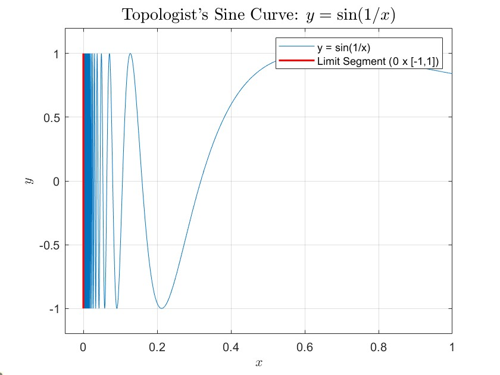

Problems QA
Chapter 2
Exercise: Is it true that any closed subset \(C\) of \(\mathbb{R}\) is the disjoint union of countably many closed intervals? Is it true if we allow any number of closed intervals? Justify your answer.
[点击展开解答]
1. 结论：不成立
证明与反例：
最著名的反例是 康托尔集 (Cantor set)，记为 \(\mathcal{C}\)。
- 闭性： 康托尔集是通过从闭区间 \([0, 1]\) 中不断挖去开区间得到的，因此它是闭集。
- 不含区间： 康托尔集是完全不连通的（totally disconnected），它不包含任何长度大于 \(0\) 的开区间。这意味着，如果我们将 \(\mathcal{C}\) 写成不相交闭区间的并，这些“区间”必须全部是单点（即退化区间 \([x, x]\)）。
- 基数矛盾： 康托尔集是不可数的（其基数为连续统势 \(\mathfrak{c}\)）。如果我们将其表示为可数个不相交闭区间的并，由于每个区间只能是单点，那么这个并集最多只能包含可数个点，这与康托尔集的不可数性矛盾。
2. 结论：成立 证明： 这个结论在数学上是平凡的，因为我们可以利用单点集的性质。
- 构造： 对于任何集合 \(C \subseteq \mathbb{R}\)（不限于闭集），我们都可以将其写成其所有单点的并： \[C = \bigcup_{x \in C} \{x\}\]
- 性质： 在 \(\mathbb{R}\) 中，单点集 \(\{x\}\) 等价于闭区间 \([x, x]\)。
- 不相交性： 显然，对于不同的 \(x, y \in C\)，集合 \(\{x\}\) 和 \(\{y\}\) 是互不相交的。
- 结论： 因此，任何集合都可以表示为（可能不可数个）互不相交闭区间的并。
Exercise: Prove that a subset \(S \subseteq \mathbb{R}\) is closed if and only if its complement \(S^c = \mathbb{R} \setminus S\) is open.
[点击展开解答]
我们将分两个方向证明这个充要条件。
1 必要性 (\(\implies\))：若 \(S\) 是闭集，则其补集 \(S^c\) 是开集
- 取任意点 \(x \in S^c\)，这意味着 \(x \notin S\)。
- 由于 \(S\) 是闭集，它包含其所有的极限点（limit points）。既然 \(x \notin S\)，那么 \(x\) 必然不是 \(S\) 的极限点。
- 根据极限点的定义，由于 \(x\) 不是极限点，必然存在某个 \(\epsilon > 0\)，使得开区间 \(B(x, \epsilon) = (x - \epsilon, x + \epsilon)\) 不包含 \(S\) 中的任何点。
- 因此，\(B(x, \epsilon) \subseteq S^c\)。
- 由于 \(S^c\) 中的每一点都是其内点，得证 \(S^c\) 是开集。
2 充分性 (\(\impliedby\))：若 \(S^c\) 是开集，则 \(S\) 是闭集
- 设 \(x\) 是 \(S\) 的一个极限点。我们需要证明 \(x \in S\)。
- 使用反证法：假设 \(x \notin S\)，则 \(x \in S^c\)。
- 因为 \(S^c\) 是开集，存在某个 \(\epsilon > 0\)，使得 \(B(x, \epsilon) \subseteq S^c\)。
- 这意味着 \(B(x, \epsilon) \cap S = \emptyset\)，即 \(x\) 的该邻域内不包含 \(S\) 中的任何点。
- 这与“\(x\) 是 \(S\) 的极限点”的定义矛盾（极限点的定义要求 \(x\) 的每一个邻域都必须包含 \(S\) 中的点）。
- 因此，假设不成立，必然有 \(x \in S\)。
- 由于 \(S\) 包含了其所有的极限点，得证 \(S\) 是闭集。
Chapter 3
Exercise: Are the following \(\mathcal{T}\) topologies on \(\mathbb{R}\)?
- \(\mathcal{T} = \{|A| = \infty\} \cup \{\emptyset\}\);
- \(\mathcal{T} = \{]-r, r[ : r > 0\} \cup \{\emptyset, \mathbb{R}\}\).
[点击展开解答]
判断一个集合族 \(\mathcal{T}\) 是否为 \(\mathbb{R}\) 上的拓扑，需要验证拓扑的三条公理：
- \(\emptyset\) 和 \(\mathbb{R}\) 都在 \(\mathcal{T}\) 中。
- \(\mathcal{T}\) 中任意个元素的并集仍在 \(\mathcal{T}\) 中。
- \(\mathcal{T}\) 中有限个元素的交集仍在 \(\mathcal{T}\) 中。
(1) \(\mathcal{T} = \{|A| = \infty\} \cup \{\emptyset\}\)
结论：不是拓扑。
理由： 它不满足有限交公理。 我们可以找到两个属于 \(\mathcal{T}\) 的无限集，它们的交集是一个非空的有限集（但不属于 \(\mathcal{T}\)）。
- 反例： 考虑集合 \(A = (\mathbb{Q} \cap \mathbb{R})\)（所有有理数集）和 \(B = ((\mathbb{R} \setminus \mathbb{Q}) \cup \{1\})\)（所有无理数加上数字 \(1\)）。
- 显然 \(|A| = \infty\) 且 \(|B| = \infty\)，因此 \(A, B \in \mathcal{T}\)。
- 然而，\(A \cap B = \{1\}\)。
- 由于 \(\{1\}\) 是一个有限集且不等于 \(\emptyset\)，所以 \(\{1\} \notin \mathcal{T}\)。
- 因此，\(\mathcal{T}\) 对有限交运算不封闭。
(2) \(\mathcal{T} = \{]-r, r[ : r > 0\} \cup \{\emptyset, \mathbb{R}\}\)
结论：是拓扑。
证明：
- 包含空集与全集： 定义中已明确给出 \(\emptyset, \mathbb{R} \in \mathcal{T}\)。
- 任意并公理： 设 \(\{U_i\}_{i \in I}\) 是 \(\mathcal{T}\) 中的一个子族。
- 如果其中某个 \(U_i = \mathbb{R}\)，则并集为 \(\mathbb{R} \in \mathcal{T}\)。
- 如果所有 \(U_i\) 都是形如 \(]-r_i, r_i[\) 的开区间，设 \(R = \sup \{r_i : i \in I\}\)。
- 若 \(R = \infty\)，则 \(\bigcup U_i = \mathbb{R} \in \mathcal{T}\)。
- 若 \(R < \infty\)，则 \(\bigcup U_i = ]-R, R[ \in \mathcal{T}\)（注：对称开区间的并集仍是对称开区间，且半径为原半径集合的上确界）。
- 有限交公理： 设 \(U_1, U_2, \dots, U_n \in \mathcal{T}\)。
- 如果其中任何一个是 \(\emptyset\)，交集为 \(\emptyset \in \mathcal{T}\)。
- 如果不含 \(\emptyset\) 但含 \(\mathbb{R}\)，\(\mathbb{R}\) 对交集结果无影响。
- 如果所有 \(U_i\) 均为 \(]-r_i, r_i[\)，则： \[\bigcap_{i=1}^n ]-r_i, r_i[ = ]-\min(r_i), \min(r_i)[\]
- 由于有限个数集的最小值 \(\min(r_i)\) 仍然是一个大于 \(0\) 的实数，该交集仍属于 \(\mathcal{T}\)。
综上所述，(2) 满足拓扑的所有定义。
Exercise: Compare the trivial, discrete, cofinite, lower limit, standard topologies and the particular and excluded point topologies at 0 on \(\mathbb{R}\).
[点击展开解答]
在拓扑学中，“比较”拓扑通常意味着建立它们之间的粗细关系 (coarser/finer relationship)。如果 \(\mathcal{T}_1 \subseteq \mathcal{T}_2\)，我们称 \(\mathcal{T}_1\) 比 \(\mathcal{T}_2\) 粗（coarser），\(\mathcal{T}_2\) 比 \(\mathcal{T}_1\) 细（finer）。
为了方便表述，我们先记这些拓扑如下：
- \(\mathcal{T}_{triv}\): 拓扑 (Trivial topology) \(\{\emptyset, \mathbb{R}\}\)
- \(\mathcal{T}_{cof}\): 余有限拓扑 (Cofinite topology)
- \(\mathcal{T}_{std}\): 标准拓扑 (Standard / Euclidean topology)
- \(\mathcal{T}_{ll}\): 下限拓扑 (Lower limit topology / Sorgenfrey line)
- \(\mathcal{T}_{disc}\): 离散拓扑 (Discrete topology) \(\mathcal{P}(\mathbb{R})\)
- \(\mathcal{T}_{PP}\): 关于 \(0\) 的特定点拓扑 (Particular point topology at \(0\)) \(\{U \subseteq \mathbb{R} \mid 0 \in U\} \cup \{\emptyset\}\)
- \(\mathcal{T}_{EP}\): 关于 \(0\) 的排除点拓扑 (Excluded point topology at \(0\)) \(\{U \subseteq \mathbb{R} \mid 0 \notin U\} \cup \{\mathbb{R}\}\)
1. 核心比较链 (Main Sequence)
这五个拓扑形成了一个严格递增的包含链： \[\mathcal{T}_{triv} \subsetneq \mathcal{T}_{cof} \subsetneq \mathcal{T}_{std} \subsetneq \mathcal{T}_{ll} \subsetneq \mathcal{T}_{disc}\]
证明与理由： * \(\mathcal{T}_{triv} \subsetneq \mathcal{T}_{cof}\): 显然平凡拓扑是最粗的。严格包含是因为 \(\mathbb{R} \setminus \{1\} \in \mathcal{T}_{cof}\) 但不在 \(\mathcal{T}_{triv}\) 中。 * \(\mathcal{T}_{cof} \subsetneq \mathcal{T}_{std}\): 任何余有限集 \(\mathbb{R} \setminus \{x_1, \dots, x_n\}\) 都可以写成有限个开区间的并集，因而是标准开集。严格包含是因为 \((0, 1) \in \mathcal{T}_{std}\)，但它的补集是无限的，所以不在 \(\mathcal{T}_{cof}\) 中。 * \(\mathcal{T}_{std} \subsetneq \mathcal{T}_{ll}\): 任何标准开区间 \((a, b)\) 都可以写成下限拓扑基元素的并集：\((a, b) = \bigcup_{n=1}^\infty [a + \frac{1}{n}, b)\)，因而是下限拓扑的开集。严格包含是因为 \([0, 1) \in \mathcal{T}_{ll}\)，但它在 \(0\) 处不包含任何标准开邻域，故不在 \(\mathcal{T}_{std}\) 中。 * \(\mathcal{T}_{ll} \subsetneq \mathcal{T}_{disc}\): 显然离散拓扑是最细的（包含所有子集）。严格包含是因为单点集 \(\{0\} \in \mathcal{T}_{disc}\)，但不在 \(\mathcal{T}_{ll}\) 中。
2. 特定点拓扑 \(\mathcal{T}_{PP}\) 与 排除点拓扑 \(\mathcal{T}_{EP}\)
这两个拓扑除了介于最粗和最细拓扑之间，与上述主链中的其他拓扑均不可比（Incomparable），并且它们彼此也不可比。
- 与平凡/离散拓扑的关系： \[\mathcal{T}_{triv} \subsetneq \mathcal{T}_{PP} \subsetneq \mathcal{T}_{disc}\] \[\mathcal{T}_{triv} \subsetneq \mathcal{T}_{EP} \subsetneq \mathcal{T}_{disc}\]
- \(\mathcal{T}_{PP}\) 与 \(\mathcal{T}_{EP}\) 不可比： \(\{0\} \in \mathcal{T}_{PP}\) 但 \(\{0\} \notin \mathcal{T}_{EP}\)；反之 \(\{1\} \in \mathcal{T}_{EP}\) 但 \(\{1\} \notin \mathcal{T}_{PP}\)。
- 与其他拓扑不可比的反例：
- \(\mathcal{T}_{PP}\) 和 \(\mathcal{T}_{std}\)：\(\{0\} \in \mathcal{T}_{PP}\) 但不在 \(\mathcal{T}_{std}\) 中；区间 \((1, 2) \in \mathcal{T}_{std}\)，但由于不包含 \(0\)，所以不在 \(\mathcal{T}_{PP}\) 中。
- \(\mathcal{T}_{EP}\) 和 \(\mathcal{T}_{std}\)：\(\{1\} \in \mathcal{T}_{EP}\) 但不在 \(\mathcal{T}_{std}\) 中；区间 \((-1, 1) \in \mathcal{T}_{std}\)，但由于它包含 \(0\)（且不是全集），所以不在 \(\mathcal{T}_{EP}\) 中。
- (同样的逻辑也适用于它们与 \(\mathcal{T}_{cof}\) 和 \(\mathcal{T}_{ll}\) 的比较)。
总结图示
如果用 Hasse 图（包含关系，越向上越“细”）来表示，结构如下：
T_discrete
/ | \
/ | \
/ T_ll \
/ | \
T_PP T_std T_EP
\ | /
\ T_cof /
\ | /
\ | /
T_trivialExercise: Let \(\{\mathcal{T}_i\}_{i \in I}\) be a family of topologies on a set \(X\). Then
- \(\mathcal{T}_{\text{inf}} = \bigcap_{i \in I} \mathcal{T}_i\) is a topology on \(X\), which is the greatest lower bound of the family;
- \(\mathcal{T}_{i_1} \cup \mathcal{T}_{i_2}\) may not be a topology on \(X\) for some \(i_1, i_2 \in I\);
- \(\mathcal{T}_{\text{sup}} = \bigcap\{\mathcal{T} \text{ is a topology on } X : \mathcal{T} \supseteq \bigcup_{i \in I} \mathcal{T}_i\}\) is a topology on \(X\), which is the least upper bound of the family.
[点击展开解答]
证明 (1)
首先证明 \(\mathcal{T}_{\text{inf}}\) 是 \(X\) 上的一个拓扑：
- 包含空集与全集： 对于所有的 \(i \in I\)，由于 \(\mathcal{T}_i\) 是拓扑，所以 \(\emptyset \in \mathcal{T}_i\) 且 \(X \in \mathcal{T}_i\)。因此，它们必然属于所有拓扑的交集：\(\emptyset, X \in \bigcap_{i \in I} \mathcal{T}_i = \mathcal{T}_{\text{inf}}\)。
- 任意并公理： 设 \(\{U_\alpha\}_{\alpha \in A}\) 是 \(\mathcal{T}_{\text{inf}}\) 的任意子族。这意味着对于每一个 \(i \in I\)，都有 \(\{U_\alpha\}_{\alpha \in A} \subseteq \mathcal{T}_i\)。因为每个 \(\mathcal{T}_i\) 都是拓扑，所以 \(\bigcup_{\alpha \in A} U_\alpha \in \mathcal{T}_i\)。由于这对于所有 \(i \in I\) 都成立，故 \(\bigcup_{\alpha \in A} U_\alpha \in \bigcap_{i \in I} \mathcal{T}_i = \mathcal{T}_{\text{inf}}\)。
- 有限交公理： 设 \(U_1, U_2, \dots, U_n \in \mathcal{T}_{\text{inf}}\)。类似地，对于所有的 \(i \in I\)，这些集合都在 \(\mathcal{T}_i\) 中。因为 \(\mathcal{T}_i\) 是拓扑，\(\bigcap_{k=1}^n U_k \in \mathcal{T}_i\)。因此，\(\bigcap_{k=1}^n U_k \in \bigcap_{i \in I} \mathcal{T}_i = \mathcal{T}_{\text{inf}}\)。 综上所述，\(\mathcal{T}_{\text{inf}}\) 是一个拓扑。
接着证明它是最大下界 (Greatest Lower Bound)：
- 下界： 根据交集的定义，显然对于任意 \(i \in I\)，都有 \(\mathcal{T}_{\text{inf}} \subseteq \mathcal{T}_i\)。所以它是该族的一个下界。
- 最大： 假设存在另一个拓扑 \(\mathcal{T}'\)，使得对于所有 \(i \in I\) 都有 \(\mathcal{T}' \subseteq \mathcal{T}_i\)。那么 \(\mathcal{T}'\) 中的任何元素必然也属于所有的 \(\mathcal{T}_i\)，因此 \(\mathcal{T}' \subseteq \bigcap_{i \in I} \mathcal{T}_i = \mathcal{T}_{\text{inf}}\)。这证明了 \(\mathcal{T}_{\text{inf}}\) 是所有下界中最大的。
证明 (2)
我们需要构造一个反例来证明两个拓扑的并集未必是拓扑。 令集合 \(X = \{a, b, c\}\)。 定义 \(X\) 上的两个拓扑：
- \(\mathcal{T}_1 = \{\emptyset, X, \{a\}\}\)
- \(\mathcal{T}_2 = \{\emptyset, X, \{b\}\}\)
考虑它们的并集： \(\mathcal{T}_1 \cup \mathcal{T}_2 = \{\emptyset, X, \{a\}, \{b\}\}\)
要使该并集成为拓扑，它必须对任意并运算封闭。然而： \(\{a\} \in \mathcal{T}_1 \cup \mathcal{T}_2\) 且 \(\{b\} \in \mathcal{T}_1 \cup \mathcal{T}_2\)，但是它们的并集 \(\{a\} \cup \{b\} = \{a, b\} \notin \mathcal{T}_1 \cup \mathcal{T}_2\)。 因此，\(\mathcal{T}_1 \cup \mathcal{T}_2\) 对并集不封闭，它不是 \(X\) 上的拓扑。
证明 (3)
令集合族 \(\mathbb{S} = \{\mathcal{T} : \mathcal{T} \text{ 是 } X \text{ 上的拓扑，且 } \mathcal{T} \supseteq \bigcup_{i \in I} \mathcal{T}_i\}\)。 首先，\(\mathbb{S}\) 不是空集，因为离散拓扑 \(\mathcal{P}(X)\) （包含 \(X\) 的所有子集）一定是一个包含 \(\bigcup_{i \in I} \mathcal{T}_i\) 的拓扑，所以 \(\mathcal{P}(X) \in \mathbb{S}\)。
根据定义，\(\mathcal{T}_{\text{sup}} = \bigcap_{\mathcal{T} \in \mathbb{S}} \mathcal{T}\)。
首先证明 \(\mathcal{T}_{\text{sup}}\) 是拓扑： 由于 \(\mathbb{S}\) 是一族拓扑，根据 (1) 中的结论（任意一族拓扑的交集仍是拓扑），\(\mathcal{T}_{\text{sup}}\) 作为 \(\mathbb{S}\) 中所有拓扑的交集，必然是一个拓扑。
接着证明它是最小上界 (Least Upper Bound)：
- 上界： 对于任意给定的 \(i \in I\) 和任意 \(\mathcal{T} \in \mathbb{S}\)，根据 \(\mathbb{S}\) 的定义有 \(\mathcal{T} \supseteq \bigcup_{i \in I} \mathcal{T}_i \supseteq \mathcal{T}_i\)。因为 \(\mathcal{T}_{\text{sup}}\) 是所有这些 \(\mathcal{T}\) 的交集，且每个 \(\mathcal{T}\) 都包含 \(\mathcal{T}_i\)，所以 \(\mathcal{T}_{\text{sup}} \supseteq \mathcal{T}_i\)。因此，\(\mathcal{T}_{\text{sup}}\) 是该族的一个上界。
- 最小： 假设存在另一个拓扑 \(\mathcal{T}^*\)，它是 \(\{\mathcal{T}_i\}_{i \in I}\) 的上界，即对于所有 \(i \in I\) 都有 \(\mathcal{T}^* \supseteq \mathcal{T}_i\)。这意味着 \(\mathcal{T}^* \supseteq \bigcup_{i \in I} \mathcal{T}_i\)。 因为 \(\mathcal{T}^*\) 是一个满足该包含关系的拓扑，根据定义，\(\mathcal{T}^*\) 属于集合族 \(\mathbb{S}\)。 既然 \(\mathcal{T}_{\text{sup}}\) 是 \(\mathbb{S}\) 中所有元素的交集，那么它必然是其中任何一个元素的子集，即 \(\mathcal{T}_{\text{sup}} \subseteq \mathcal{T}^*\)。这证明了 \(\mathcal{T}_{\text{sup}}\) 是所有上界中最小的。
Exercise: The collection \(\mathcal{T}_{\mathbb{R}^n}=\{\text{open \ subsets \ of } \mathbb{R}\}\) is a topology on \(\mathbb{R}^n\).
[点击展开解答]
\(\mathcal{T}_{\mathbb{R}^n}\) 为 \(\mathbb{R}^n\) 中所有开集的集合族（即可以表示为任意多个开球或开区间（盒）的并集的集合）。证明其构成 \(\mathbb{R}^n\) 上的拓扑，需验证拓扑空间的三个公理：
包含空集与全集： 空集 \(\emptyset\) 可以视为零个开球的并集，故 \(\emptyset \in \mathcal{T}_{\mathbb{R}^n}\)；全空间 \(\mathbb{R}^n\) 可表示为空间中所有开球的并集（例如以所有点为中心，半径为 \(1\) 的开球之并），故 \(\mathbb{R}^n \in \mathcal{T}_{\mathbb{R}^n}\)。
对任意并集封闭： 设 \(\{U_\alpha\}_{\alpha \in A}\) 是 \(\mathcal{T}_{\mathbb{R}^n}\) 中的任意一族子集。因为每个 \(U_\alpha\) 都是一族开球的并集，所以这些 \(U_\alpha\) 的并集 \(\bigcup_{\alpha \in A} U_\alpha\) 显然也是一族开球的并集。根据定义，\(\bigcup_{\alpha \in A} U_\alpha \in \mathcal{T}_{\mathbb{R}^n}\)。
对有限交集封闭： 只需证明两个集合相交的情况。设 \(U_1, U_2 \in \mathcal{T}_{\mathbb{R}^n}\)，若 \(U_1 \cap U_2 = \emptyset\)，则属于 \(\mathcal{T}_{\mathbb{R}^n}\)；若非空，任取 \(x \in U_1 \cap U_2\)。 因为 \(x \in U_1\) 且 \(x \in U_2\)，由开集的定义，存在以 \(x\) 为中心的开球 \(B(x, r_1) \subseteq U_1\) 且 \(B(x, r_2) \subseteq U_2\)。 取半径 \(r = \min(r_1, r_2) > 0\)，则有开球 \(B(x, r) \subseteq B(x, r_1) \cap B(x, r_2) \subseteq U_1 \cap U_2\)。 这说明对于交集中的每一个点 \(x\)，都存在一个开球完全包含于该交集中。因此 \(U_1 \cap U_2\) 可以表示为这些包含在内的小开球的并集，故 \(U_1 \cap U_2 \in \mathcal{T}_{\mathbb{R}^n}\)。
[点击展开解答]
1. 证明 \(\mathcal{B}_{\text{lower}}\) 是一组拓扑基
覆盖性： 对任意 \(x \in \mathbb{R}\)，存在 \([x, x+1[ \in \mathcal{B}_{\text{lower}}\) 使得 \(x \in [x, x+1[\)，覆盖了整个 \(\mathbb{R}\)。
交集条件： 设有两个基元素 \([a, b[\) 和 \([c, d[\)，且 \(x \in [a, b[ \cap [c, d[\)。它们的交集为 \([a, b[ \cap [c, d[ = [\max(a, c), \min(b, d)[\)。只要交集非空，它本身就依然属于 \(\mathcal{B}_{\text{lower}}\)。因此显然存在包含 \(x\) 且包含于该交集中的基元素。由它生成的即为下限拓扑 \(\mathcal{T}_{\text{lower}}\)。
2. 证明基元素是既开又闭集 (Clopen)
设 \(B = [a, b[ \in \mathcal{B}_{\text{lower}}\)。
开集： 因为 \(B\) 本身是拓扑基中的元素，所以它在 \(\mathcal{T}_{\text{lower}}\) 中必然是开集。
闭集： 考虑 \(B\) 的补集 \(\mathbb{R} \setminus [a, b[ = (-\infty, a[ \cup [b, +\infty[\)。 注意到 \((-\infty, a[ = \bigcup_{n=1}^{\infty} [a-n, a[\)，且 \([b, +\infty[ = \bigcup_{n=1}^{\infty} [b, b+n[\)。补集的两部分均可表示为无穷多个基元素的并集，因此补集是开集。补集为开集，则原集合 \([a, b[\) 为闭集。
3. 证明 \(\mathcal{T}_{\text{lower}}\) 不存在可数基
利用反证法。
假设 \(\mathcal{T}_{\text{lower}}\) 存在一个可数的基 \(\mathcal{B}'\)。
对于任意 \(x \in \mathbb{R}\)，集合 \([x, x+1[\) 是包含 \(x\) 的开集。根据基的定义，必定存在某个基元素 \(B_x \in \mathcal{B}'\) 使得 \(x \in B_x \subseteq [x, x+1[\)。
因为 \(x \in B_x\) 且 \(B_x\) 包含在以 \(x\) 为下限的区间内，所以 \(x\) 是集合 \(B_x\) 的唯一最小值，即 \(\min(B_x) = x\)。
如果实数 \(x \neq y\)，那么对应的基元素必定不相同（\(B_x \neq B_y\)），因为它们的最小值不同。
这就建立了一个从不可数集 \(\mathbb{R}\) 到可数集 \(\mathcal{B}'\) 的单射（\(x \mapsto B_x\)）。这要求 \(\mathcal{B}'\) 的基数至少为不可数，与可数假设矛盾。故 \(\mathcal{T}_{\text{lower}}\) 没有可数基。
Exercise: Let \((X, \mathcal{T}_X)\) and \((Y, \mathcal{T}_Y)\) be topological spaces.
If \(\mathcal{T}_X\) is discrete, then which maps \(X \to Y\) are continuous?
If \(\mathcal{T}_Y\) is discrete, then which maps \(X \to Y\) are continuous?
If \(\mathcal{T}_X\) is trivial, then which maps \(X \to Y\) are continuous?
If \(\mathcal{T}_Y\) is trivial, then which maps \(X \to Y\) are continuous?
[点击展开解答]
根据连续映射的定义：映射 \(f: X \to Y\) 是连续的，当且仅当对于 \(Y\) 中的任意开集 \(V \in \mathcal{T}_Y\)，其原像 \(f^{-1}(V)\) 都是 \(X\) 中的开集（即 \(f^{-1}(V) \in \mathcal{T}_X\)）。
所有的映射都是连续的。 因为 \(\mathcal{T}_X\) 是离散拓扑，这意味着 \(X\) 的所有子集都是开集。对于任意映射 \(f\) 以及 \(Y\) 中的任意开集 \(V\)，其原像 \(f^{-1}(V)\) 作为 \(X\) 的一个子集，在 \(X\) 中必然是开集。
局部常数映射（Locally constant maps）是连续的。 因为 \(\mathcal{T}_Y\) 是离散拓扑，这意味着 \(Y\) 中的所有子集（包括所有的单点集 \(\{y\}\)）都是开集。为了使 \(f\) 连续，对于任意 \(y \in Y\)，其原像 \(f^{-1}(\{y\})\) 必须在 \(X\) 中是开集。这等价于要求映射 \(f\) 在每一点的某个邻域内取值不变（即在 \(X\) 的每个连通分支上都是常数）。
满足“对 \(Y\) 中的任意开集 \(V\)，\(f^{-1}(V) = \emptyset\) 或 \(f^{-1}(V) = X\)” 的映射是连续的（常数映射必然包含在内）。 因为 \(\mathcal{T}_X\) 是平凡拓扑（密着拓扑），\(X\) 中的开集仅有 \(\emptyset\) 和 \(X\) 自身。因此，若 \(f\) 连续，对于 \(Y\) 中的任何开集 \(V\)，\(f^{-1}(V)\) 只能是 \(\emptyset\) 或 \(X\)。所有的常数映射都天然满足这一条件；如果空间 \(Y\) 至少满足 \(T_0\) 分离公理，那么只有常数映射是连续的。
所有的映射都是连续的。 因为 \(\mathcal{T}_Y\) 是平凡拓扑，\(Y\) 中的开集只有 \(\emptyset\) 和 \(Y\)。对于任意的映射 \(f\)，这两个开集的原像分别为 \(f^{-1}(\emptyset) = \emptyset\) 和 \(f^{-1}(Y) = X\)。由于 \(\emptyset\) 和 \(X\) 属于 \(X\) 上的任何拓扑 \(\mathcal{T}_X\)，原像总是开集，因此所有映射都必然连续。
Exercise: A sequence \((p_n)_{n\in\mathbb{N}}\) in a topological space \((X,\mathcal{T})\) converges to \(p\in X\), denoted by \(p_n\to p\), iff \[(\forall U \in \mathcal{N}_{X,p})(\exists A \in \mathcal{F}_{\mathbb{N}})(n \in A \implies p_n \in U)\]
- Recall that in mathematical analysis a function is continuous iff it maps any convergent sequence to a convergent sequence. Show that it is not the case in general topological spaces.
- Recall that of Euclidean spaces a subset is closed iff it contains the limit of any convergent sequence. Show that it is not the case in general topological spaces.
[点击展开解答]
这两个问题都可以通过构造一个特定的拓扑空间——带有可数补拓扑（cocountable topology）的实数集来提供反例。
设 \(X = \mathbb{R}\)，其拓扑 \(\mathcal{T}_{cc}\) 定义为：开集 \(U \in \mathcal{T}_{cc}\) 当且仅当 \(U = \emptyset\) 或 \(X \setminus U\) 是可数集（即补集可数）。 在这个拓扑空间中，一个序列 \(x_n \to x\) 当且仅当该序列最终为常数（即存在 \(N \in \mathbb{N}\)，使得对所有 \(n \ge N\) 都有 \(x_n = x\)）。 （简要证明：如果 \(x_n \to x\) 但序列中有无穷多项不等于 \(x\)，设这些项构成集合 \(S = \{x_n : x_n \neq x\}\)。因为 \(S\) 是序列的子集，所以 \(S\) 是可数集。此时 \(U = \mathbb{R} \setminus S\) 是包含 \(x\) 的开集，但 \(U\) 却遗漏了序列中无穷多个不等于 \(x\) 的项，这与 \(x_n \to x\) 的定义矛盾。）
(1) 序列连续不蕴含拓扑连续的反例：
考虑恒等映射 \(f: (\mathbb{R}, \mathcal{T}_{cc}) \to (\mathbb{R}, \mathcal{T}_{\text{std}})\)，其中 \(\mathcal{T}_{\text{std}}\) 是实数集上的标准欧几里得拓扑。
对于 \((\mathbb{R}, \mathcal{T}_{cc})\) 中的任意收敛序列 \(x_n \to x\)，由上述性质可知它最终为常数 \(x\)。因此映射后的序列 \(f(x_n) = x_n\) 最终也为常数，自然在标准拓扑下收敛于 \(f(x) = x\)。这说明映射 \(f\) 将收敛序列映为了收敛序列。
然而，映射 \(f\) 并不是连续的。例如，区间 \((0, 1)\) 是 \((\mathbb{R}, \mathcal{T}_{\text{std}})\) 中的开集，但它的原像 \(f^{-1}((0, 1)) = (0, 1)\) 在 \((\mathbb{R}, \mathcal{T}_{cc})\) 中不是开集（因为其补集 \(\mathbb{R} \setminus (0, 1)\) 是不可数的）。
(2) 包含所有收敛序列极限的集合不一定是闭集的反例：
在拓扑空间 \((\mathbb{R}, \mathcal{T}_{cc})\) 中，考虑子集 \(A = (0, 1)\)。
假设 \((x_n)\) 是 \(A\) 中的任意收敛序列，且在 \(\mathbb{R}\) 中收敛于极限 \(x\)。根据前面证明的性质，该序列最终必定等于常数 \(x\)。由于序列的所有项都在 \(A\) 中，所以常数项也就是极限 \(x\) 也必然属于 \(A\)。因此，\(A\) 包含了其所有收敛序列的极限（即 \(A\) 是序列闭集）。
然而，\(A\) 在该可数补拓扑下并不是闭集。根据定义，闭集的补集必须是开集，这意味着闭集本身必须是可数集或者是全集 \(\mathbb{R}\)。由于 \(A = (0, 1)\) 是一个不可数集，因此它在 \((\mathbb{R}, \mathcal{T}_{cc})\) 中不是闭集。
[点击展开解答]
在同胚意义下（即在集合元素的置换下等价），包含 3 个元素的集合 \(X = \{a, b, c\}\) 上共有 9 种不同的拓扑结构等价类。我们可以按照其中开集的数量和包含结构进行分类列举（以下各举一例作为该同胚类的代表）：
1. 平凡拓扑（包含 2 个开集）： \(\mathcal{T}_1 = \{\emptyset, X\}\)
2. 仅含一个单元素开集（包含 3 个开集）： \(\mathcal{T}_2 = \{\emptyset, \{a\}, X\}\)
3. 仅含一个双元素开集（包含 3 个开集）： \(\mathcal{T}_3 = \{\emptyset, \{a, b\}, X\}\)
4. 包含嵌套的单元素和双元素开集（包含 4 个开集）： \(\mathcal{T}_4 = \{\emptyset, \{a\}, \{a, b\}, X\}\)
5. 包含互补的单元素和双元素开集（包含 4 个开集）： \(\mathcal{T}_5 = \{\emptyset, \{c\}, \{a, b\}, X\}\)
6. 由两个单元素开集生成的拓扑（包含 5 个开集）： \(\mathcal{T}_6 = \{\emptyset, \{a\}, \{b\}, \{a, b\}, X\}\)
7. 由两个双元素开集生成的拓扑（包含 5 个开集）： \(\mathcal{T}_7 = \{\emptyset, \{a\}, \{a, b\}, \{a, c\}, X\}\)
8. 包含三个单元素/双元素特定组合的拓扑（包含 6 个开集）： \(\mathcal{T}_8 = \{\emptyset, \{a\}, \{b\}, \{a, b\}, \{a, c\}, X\}\)
9. 离散拓扑（包含 8 个开集）： \(\mathcal{T}_9 = \{\emptyset, \{a\}, \{b\}, \{c\}, \{a, b\}, \{a, c\}, \{b, c\}, X\}\)
Chapter 4
[点击展开解答]
在范畴 \(\mathbf{Set}\) 中，单射 (Monomorphism) 即为单射函数，满射 (Epimorphism) 即为满射函数，同构 (Isomorphism) 即为双射函数。
1. 证明所有单射都是极端单射 (Extremal Monomorphisms)
设 \(m: A \to B\) 为一个单射。根据极端单射的定义，我们需要证明：若存在分解 \(m = f \circ e\)，其中 \(e: A \to C\) 是满射，则 \(e\) 必定是同构。
因为 \(m\) 是单射，所以合成函数 \(f \circ e\) 也是单射。
假设存在 \(x, y \in A\) 使得 \(e(x) = e(y)\)，那么两边同时作用 \(f\) 得到 \(f(e(x)) = f(e(y))\)，即 \(m(x) = m(y)\)。由于 \(m\) 是单射，必然得出 \(x = y\)。
因此，\(e\) 必定是单射。既然已知 \(e\) 既是单射又是满射，那么 \(e\) 就是一个双射（即 \(\mathbf{Set}\) 中的同构）。故证明 \(m\) 是极端单射。
2. 证明所有满射都是极端满射 (Extremal Epimorphisms)
设 \(e: A \to B\) 为一个满射。根据极端满射的定义，我们需要证明：若存在分解 \(e = m \circ f\)，其中 \(m: C \to B\) 是单射，则 \(m\) 必定是同构。
因为 \(e\) 是满射，所以对于任意的 \(b \in B\)，都存在 \(a \in A\) 使得 \(e(a) = b\)。
将分解 \(e = m \circ f\) 代入，得到 \((m \circ f)(a) = b\)，即 \(m(f(a)) = b\)。这说明对于 \(B\) 中的任意元素 \(b\)，在 \(C\) 中都存在至少一个元素 \(c = f(a)\) 使得 \(m(c) = b\)。
因此，\(m\) 必定是满射。既然已知 \(m\) 是单射，现在又得出 \(m\) 是满射，那么 \(m\) 就是一个双射（即 \(\mathbf{Set}\) 中的同构）。故证明 \(e\) 是极端满射。
[点击展开解答]
1. 自同态与自同构
在范畴 \(\mathbf{Set}\) 中，对象为集合，态射为函数。根据范畴论定义，对象 \(X\) 的自同态是从 \(X\) 到 \(X\) 的态射，即普通的函数 \(f: X \to X\)。
自同构是可逆的自同态。在 \(\mathbf{Set}\) 中，态射可逆当且仅当该函数是双射。所有从 \(X\) 到 \(X\) 的双射在函数复合运算下构成一个群，这正是 \(X\) 的对称群（或置换群）\(S_X\)。
2. 证明幂等元是分裂的 (All idempotents in Set are split)
设 \(e: X \to X\) 是 \(\mathbf{Set}\) 中的一个幂等元，即满足 \(e \circ e = e\)（对所有 \(x \in X\)，有 \(e(e(x)) = e(x)\)）。
要证明 \(e\) 是分裂的，需构造一个对象（集合）\(A\) 及映射 \(r: X \to A\) (收缩) 和 \(s: A \to X\) (截面)，使得 \(r \circ s = \text{id}_A\) 且 \(s \circ r = e\)。
取 \(A\) 为映射 \(e\) 的像集，即 \(A = \text{Im}(e) = \{e(x) \mid x \in X\}\)。
定义截面 \(s: A \to X\) 为包含映射，即对任意 \(a \in A\)，\(s(a) = a\)。
定义收缩 \(r: X \to A\) 为 \(e\) 限制其上域后的函数，即对任意 \(x \in X\)，\(r(x) = e(x)\)。
验证 \(r \circ s = \text{id}_A\)：任取 \(a \in A\)，因 \(A\) 是 \(e\) 的像集，必存在 \(x \in X\) 使 \(a = e(x)\)。于是代入计算得 \(r(s(a)) = r(a) = e(a) = e(e(x)) = e(x) = a\)。
验证 \(s \circ r = e\)：任取 \(x \in X\)，计算得 \(s(r(x)) = s(e(x))\)。由于 \(e(x) \in A\)，包含映射 \(s\) 不改变其值，所以 \(s(e(x)) = e(x)\)。
因此，\(\mathbf{Set}\) 中的任意幂等元 \(e\) 都可以通过其像集分裂，这种操作相当于先将 \(X\) 投影（投射并收缩）到其像集 \(A\) 上，然后再将 \(A\) 嵌入回 \(X\) 中。
[点击展开解答]
在范畴 \(\mathbf{Set}\) 中，对象是集合，态射是函数。
1. 证明空集 \(\emptyset\) 是初始对象 (Initial Object)
初始对象要求：对于 \(\mathbf{Set}\) 中的任意对象（集合）\(X\)，存在唯一的态射（函数）\(f: \emptyset \to X\)。
根据函数的定义，函数是从定义域到到达域的笛卡尔积的子集。由于 \(\emptyset \times X = \emptyset\)，唯一可能的子集就是空集本身。这个“空函数”满足函数的所有条件（“对于定义域中的每个元素”这一前提是空虚地为真）。因此，存在且仅存在一个从 \(\emptyset\) 到 \(X\) 的函数。故空集是初始对象。
2. 证明任意单元素集合 \(\{*\}\) 是终结对象 (Terminal Object)
终结对象要求：对于 \(\mathbf{Set}\) 中的任意对象（集合）\(X\)，存在唯一的态射（函数）\(f: X \to \{*\}\)。
对于 \(X\) 中的任意元素 \(x\)，由于到达域中只有一个元素 \(*\)，我们别无选择，只能将所有 \(x\) 映射到该唯一元素，即定义 \(f(x) = *\)。这种映射方式是唯一确定的，因此对于任何集合 \(X\)，存在且仅存在一个到单元素集合的函数。故单元素集合是终结对象。
3. 证明不存在零对象 (Zero Object)
零对象的定义为：在范畴中既是初始对象又是终结对象的对象。
根据范畴论的性质，任意两个初始对象彼此同构，任意两个终结对象也彼此同构。在 \(\mathbf{Set}\) 中，这意味着任何零对象必须同时与空集同构（存在双射），且与单元素集合同构。显然，空集（势为0）与单元素集合（势为1）之间不存在双射，不可能同构。因此 \(\mathbf{Set}\) 中不存在零对象。
4. 证明不存在零态射 (Zero Morphism)
若一个范畴存在零态射，则对于范畴内的任意两个对象 \(X\) 和 \(Y\)，同态集 \(\text{Hom}(X, Y)\) 非空（必须至少包含一个零态射）。
然而，在 \(\mathbf{Set}\) 中，若取 \(X\) 为任意非空集合，\(Y = \emptyset\)，则不存在任何从非空集合映射到空集的函数。这意味着同态集 \(\text{Hom}(X, \emptyset)\) 是空集。既然对于某些对象对连态射都不存在，自然无法在全局定义零态射。
[点击展开解答]
在点集范畴 \(\mathbf{Set}_*\) 中，对象是带有基点的集合 \((X, x_0)\)，态射是保基点的函数，即满足 \(f(x_0) = y_0\) 的函数 \(f: X \to Y\)。
1. 单射、满射与双态射的刻画
单射 (Monomorphisms): 在 \(\mathbf{Set}_*\) 中，单射恰好是单射函数 (Injective functions)。证明思路与在 \(\mathbf{Set}\) 中相同，若态射非单射，总可以通过构造从自由点集出发的不同态射使其复合相等来得出矛盾。
满射 (Epimorphisms): 在 \(\mathbf{Set}_*\) 中，满射恰好是满射函数 (Surjective functions)。若 \(f: (X, x_0) \to (Y, y_0)\) 不是满射，即存在 \(y \in Y \setminus \text{Im}(f)\)。我们可以构造两个从 \(Y\) 到两点集 \((\{0, 1\}, 0)\) 的保基点函数 \(g_1, g_2\)：令 \(g_1\) 将 \(Y\) 全映射到 \(0\)；令 \(g_2(y) = 1\)，其余映射到 \(0\)。此时 \(g_1 \circ f = g_2 \circ f\) 但 \(g_1 \neq g_2\)，说明 \(f\) 不是满射态射。
双态射 (Bimorphisms): 既是单射态射又是满射态射的态射。因此，双态射恰好是双射保基点函数 (Bijective basepoint-preserving functions)。
2. 分裂性 (Splitness)
分裂单射 (Split Monomorphisms): \(\mathbf{Set}_*\) 中的所有单射都是分裂的。设 \(f: X \to Y\) 是单射，我们需要构造左逆 \(g: Y \to X\) 使得 \(g \circ f = \text{id}_X\)。对于 \(y \in \text{Im}(f)\)，由于 \(f\) 是单射，存在唯一的 \(x\) 使 \(f(x)=y\)，定义 \(g(y)=x\)。对于 \(y \notin \text{Im}(f)\)，统一将其映射到基点 \(x_0\) 即可。因为已知 \(f(x_0)=y_0\)，从而 \(g(y_0)=x_0\)，这保证了 \(g\) 是一个合法的保基点态射。
分裂满射 (Split Epimorphisms): 假设选择公理 (Axiom of Choice) 成立，\(\mathbf{Set}_*\) 中的所有满射也都是分裂的。设 \(f: X \to Y\) 是满射，我们需要构造右逆 \(g: Y \to X\) 使得 \(f \circ g = \text{id}_Y\)。对于基点 \(y_0\)，我们严格规定 \(g(y_0) = x_0\)（这是合法的，因为 \(f(x_0)=y_0\)）。对于 \(Y\) 中的其他元素 \(y \neq y_0\)，利用选择公理在非空的原像集 \(f^{-1}(y)\) 中任选一个元素定义为 \(g(y)\)。这样构造的 \(g\) 满足保基点性质且为 \(f\) 的右逆。
分裂双态射 (Split Bimorphisms): 显然所有双态射都是分裂的（它们在 \(\mathbf{Set}_*\) 中就是同构态射）。
Chapter 11
Exercise: Let \(\mathcal{T}_1\) be a coarser topology than \(\mathcal{T}_2\) on a set \(X\).
- Is any connected subspace of \((X, \mathcal{T}_1)\) also connected under the subspace topology induced from \(\mathcal{T}_2\)? Or the other way around?
- Let \(\mathcal{T}_1\) be the Zariski topology on \(\mathbb{R}^2\) and let \(\mathcal{T}_2\) be the standard topology on \(\mathbb{R}^2\). Find a connected subspace of \(\mathbb{R}^2\) equipped with one of \(\mathcal{T}_i\) that is disconnected with respect to the other topology.
[点击展开解答]
- 不一定；反过来成立。
\((X, \mathcal{T}_1)\) 中连通不一定在 \(\mathcal{T}_2\) 中连通：因为 \(\mathcal{T}_1 \subseteq \mathcal{T}_2\)（\(\mathcal{T}_2\) 是更精细的拓扑，拥有更多的开集），所以更容易在 \(\mathcal{T}_2\) 中找到能够分离该子空间的开集。例如对包含两个以上的元素的集合，\(\mathcal{T}_1\) 取平凡拓扑（连通），\(\mathcal{T}_2\) 取离散拓扑（完全不连通）。
\((X, \mathcal{T}_2)\) 中连通可推导出在 \(\mathcal{T}_1\) 中连通：考虑恒等映射 \(id: (X, \mathcal{T}_2) \to (X, \mathcal{T}_1)\)。因为开集 \(\mathcal{T}_1 \subseteq \mathcal{T}_2\)，该恒等映射是连续映射。根据连通集在连续映射下的像仍为连通集的性质，\(\mathcal{T}_2\) 中的连通子空间在 \(\mathcal{T}_1\) 中必定连通。
- 例子：双曲线 \(S = \{ (x,y) \in \mathbb{R}^2 \mid x^2 - y^2 = 1 \}\)。
Zariski 拓扑 \(\mathcal{T}_1\) 是比标准拓扑 \(\mathcal{T}_2\) 更粗的拓扑。根据第 (1) 问的结论，我们需要寻找一个在 \(\mathcal{T}_1\) 中连通但在 \(\mathcal{T}_2\) 中不连通的集合。
在标准拓扑 \(\mathcal{T}_2\) 下，\(S\) 被分成了左右两支，它可以表示为 \(S = (S \cap \{(x,y) \mid x > 0\}) \cup (S \cap \{(x,y) \mid x < 0\})\)。这是两个不相交的非空相对开集的并，因此 \(S\) 在 \(\mathcal{T}_2\) 下是不连通的。
在 Zariski 拓扑 \(\mathcal{T}_1\) 下，\(S\) 是由多项式 \(f(x,y) = x^2 - y^2 - 1\) 定义的代数集。因为 \(x^2 - y^2 - 1\) 在实系数多项式环 \(\mathbb{R}[x,y]\) 中是不可约多项式，所以 \(S\) 是一个不可约代数集（不可约空间）。由于所有的不可约拓扑空间都一定是连通空间，因此 \(S\) 在 \(\mathcal{T}_1\) 下是连通的。
[点击展开解答]
1. 空间 \(X\) 的草图与描述
\(X\) 是在单位正方形 \([0, 1] \times [0, 1]\) 中挖去两组交替的无穷多条垂直线段后得到的空间：
- 第一组（顶部相连）：横坐标为 \(x = \frac{1}{4n-2}\) 或 \(1 - \frac{1}{4n-2}\)，线段从顶部 \(y=1\) 向下延伸到 \(y = \frac{1}{6n-3}\)。随着 \(n \to \infty\)，这些线段分别向边界 \(x=0\) 和 \(x=1\) 逼近，且底部越来越接近 \(y=0\)。
- 第二组（底部相连）：横坐标为 \(x = \frac{1}{4n}\) 或 \(1 - \frac{1}{4n}\)，线段从底部 \(y=0\) 向上延伸到 \(y = 1 - \frac{1}{6n}\)。随着 \(n \to \infty\)，这些线段也向边界 \(x=0\) 和 \(x=1\) 逼近，且顶部越来越接近 \(y=1\)。
直观上，\(X\) 中间部分（\(0 < x < 1\)）形成了一条连续蜿蜒、上下折叠的“走廊”，并且在边界处（\(x=0\) 和 \(x=1\)）保留了完整的垂直线段 \(\{0\} \times [0, 1]\) 和 \(\{1\} \times [0, 1]\)。这本质上是“拓扑正弦曲线”（Topologist’s Sine Curve）的双侧变体。
2. 连通分支 (Components)
\(X\) 只有 1个连通分支，即 \(X\) 本身（意味着 \(X\) 是连通空间）。
证明： 令中间的“走廊”部分为 \(U = X \cap ((0, 1) \times [0, 1])\)。由于在 \(U\) 中总是可以绕过被挖去的线段末端（即在线段下方或上方通过），因此 \(U\) 内任意两点可用折线相连，即 \(U\) 是道路连通的，从而 \(U\) 是连通的。 考察边界线段 \(L = \{0\} \times [0, 1]\) 和 \(R = \{1\} \times [0, 1]\)，它们显然包含在 \(X\) 中。 因为走廊 \(U\) 在向 \(x=0\) 逼近时，其 \(y\) 坐标在 \(0\) 和 \(1\) 之间剧烈且无限次地上下震荡，这导致 \(L\) 上的每一点都是 \(U\) 的极限点。同理，\(R\) 上的每一点也是 \(U\) 的极限点。因此有 \(L \subset \overline{U}\) 且 \(R \subset \overline{U}\)。 根据拓扑学性质，由于 \(U\) 是连通的，且 \(U \subset X \subset \overline{U}\)，因此 \(X\) 必然是连通的。
3. 道路连通分支 (Path-components)
\(X\) 共有 3个道路连通分支，分别是：\(L = \{0\} \times [0, 1]\)，\(R = \{1\} \times [0, 1]\)，以及 \(U = X \cap ((0, 1) \times [0, 1])\)。
证明：
- \(L, R, U\) 各自显然是内部道路连通的。
- 反证法证明 \(L\) 与 \(U\) 不道路连通：假设存在一条连续路径 \(\gamma: [0, 1] \to X\) 连接 \(L\) 中的某点与 \(U\) 中的某点。设 \(t_0\) 为路径最后一次处于 \(L\) 上的时刻。当 \(t \to t_0^+\) 时，\(\gamma(t)\) 的横坐标 \(x(t) \to 0\)。为了使得路径留在 \(X\) 中不被阻挡，当 \(x(t)\) 从右向左穿越 \(x = \frac{1}{4n-2}\) 时，\(y(t)\) 必须小于 \(\frac{1}{6n-3}\)（被迫接近 0）；而当 \(x(t)\) 穿越更接近 0 的 \(x = \frac{1}{4n}\) 时，\(y(t)\) 必须大于 \(1 - \frac{1}{6n}\)（被迫接近 1）。
- 这意味着随着 \(t \to t_0^+\)，\(y(t)\) 必须在 0 和 1 附近无限次地来回突变，无法收敛到任何极限值，这违背了路径 \(\gamma\) 在 \(t_0\) 处的连续性。
- 因此，\(L\) 不能与 \(U\) 道路连通。同理可严格证明 \(R\) 也不能与 \(U\) 道路连通。\(L\) 与 \(R\) 之间被 \(U\) 隔断，自然也不互相道路连通。

[点击展开解答]
为了证明这个命题，我们首先明确拓扑正弦曲线 (Topologist’s sine curve) 及其闭包的定义。 令 \(S = \{(x, \sin(1/x)) \mid 0 < x \le 1\}\) 为 \(x>0\) 时的连续曲线部分。 拓扑正弦曲线通常定义为 \(T = S \cup \{(0,0)\}\)。 闭拓扑正弦曲线定义为 \(S\) 的闭包，即 \(\overline{T} = S \cup (\{0\} \times [-1, 1])\)。
1. 证明连通性 (Connectedness)
- \(S\) 的连通性： 函数 \(f: (0, 1] \to \mathbb{R}^2\) 定义为 \(f(x) = (x, \sin(1/x))\) 是连续函数。由于区间 \((0, 1]\) 是连通的，连通空间在连续映射下的像必定连通，故 \(S = f((0, 1])\) 是连通空间。
- \(T\) 和 \(\overline{T}\) 的连通性： 根据拓扑学的一个基本定理，如果一个子空间 \(A\) 是连通的，那么满足 \(A \subseteq B \subseteq \overline{A}\) 的任意子空间 \(B\) 也是连通的。因为 \(S \subset T \subset \overline{T} = \overline{S}\)，且 \(S\) 是连通的，所以 \(T\) 和 \(\overline{T}\)（闭拓扑正弦曲线）都是连通的。
2. 证明非道路连通性 (Not path-connected)
我们通过反证法证明更广泛的 \(\overline{T}\) 不是道路连通的（这自然蕴含了其子空间 \(T\) 也不是道路连通的）。假设 \(\overline{T}\) 是道路连通的。
假设存在一条连续路径 \(p: [0, 1] \to \overline{T}\)，设 \(p(t) = (x(t), y(t))\)。我们假定该路径连接了 \(y\) 轴上的点和 \(S\) 中的点，即 \(p(0) \in \{0\} \times [-1, 1]\) 且 \(p(1) \in S\)。
由于 \(x(t)\) 是从 \([0, 1]\) 到 \(\mathbb{R}\) 的连续函数，原像集合 \(A = \{t \in [0, 1] \mid x(t) = 0\}\) 是一个闭集。已知 \(p(0)\) 的 \(x\) 坐标为 0，所以 \(0 \in A\)，即 \(A\) 是非空有界闭集。
令 \(t_0 = \max A\)（由于 \(p(1) \in S\)，即 \(x(1) > 0\)，因此 \(t_0 < 1\)）。根据定义，对于所有的 \(t \in (t_0, 1]\)，都有 \(x(t) > 0\)。这意味着当 \(t > t_0\) 时，路径完全位于曲线 \(S\) 上，满足 \(y(t) = \sin(1/x(t))\)。
因为路径 \(p(t)\) 在 \(t_0\) 处连续，当 \(t \to t_0^+\) 时，\(x(t) \to 0^+\)，且极限 \(\lim_{t \to t_0^+} y(t) = y(t_0)\) 必须存在且有限。
然而，由于 \(x(t)\) 是连续的，当 \(t\) 从右侧趋近于 \(t_0\) 时，\(x(t)\) 会连续地取遍某个区间 \((0, \epsilon)\) 内的所有值（介值定理）。因此，\(1/x(t)\) 会趋于正无穷大，导致 \(\sin(1/x(t))\) 在 \(-1\) 和 \(1\) 之间无限次高频震荡。
这种震荡导致极限 \(\lim_{t \to t_0^+} \sin(1/x(t))\) 根本不存在，这与 \(y(t)\) 在 \(t_0\) 处的连续性产生了不可调和的矛盾。
因此，不存在这样的连续路径，\(\overline{T}\) 以及 \(T\) 均不是道路连通的。
[点击展开解答]
不存在。在 \(\mathbb{R}^n\)（包括 \(\mathbb{R}^2\)）中，任何开的连通子集必然也是道路连通的。这可以推广到任何局部道路连通空间。
证明步骤如下：
- 假设 \(U\) 是 \(\mathbb{R}^2\) 中的一个非空、连通的开集。在 \(U\) 中任取一点 \(x_0\)。
- 定义 \(V = \{x \in U \mid x \text{ 可以通过 } U \text{ 内的连续路径与 } x_0 \text{ 相连}\}\)。我们的目标是证明 \(V = U\)。
- 证明 \(V\) 是开集： 对于任意 \(y \in V\)，由于 \(U\) 是开集，存在以 \(y\) 为中心且完全包含在 \(U\) 中的开圆盘 \(B(y, r) \subseteq U\)。因为开圆盘本身是凸集（自然是道路连通的），\(B(y, r)\) 中的任意一点都可以与 \(y\) 道路相连。由于 \(y \in V\)（\(y\) 与 \(x_0\) 道路相连），将路径拼接可知，\(B(y, r)\) 中的任意一点都能与 \(x_0\) 道路相连。因此 \(B(y, r) \subseteq V\)，这证明了 \(V\) 是开集。
- 证明 \(U \setminus V\) 是开集： 对于任意 \(z \in U \setminus V\)（即 \(z \in U\) 但不能与 \(x_0\) 道路相连），由于 \(U\) 是开集，同样存在开圆盘 \(B(z, r) \subseteq U\)。假设 \(B(z, r)\) 中存在某点能与 \(x_0\) 道路相连，那么 \(z\) 可以先在圆盘内与该点相连，再与 \(x_0\) 相连，这就导致 \(z \in V\)，产生矛盾。因此，\(B(z, r)\) 中的所有点都不能与 \(x_0\) 道路相连，即 \(B(z, r) \subseteq U \setminus V\)。这证明了 \(U \setminus V\) 也是开集。
- 利用连通性得出结论： 现在我们将空间 \(U\) 写成了两个不相交的开集之并：\(U = V \cup (U \setminus V)\)。由于 \(x_0 \in V\)，可知 \(V\) 是非空开集。因为已知 \(U\) 是连通空间，根据连通空间的定义，它不能表示为两个非空的不相交开集之并。因此，另一部分 \(U \setminus V\) 必须为空集 \(\emptyset\)。
- 结论：\(U \setminus V = \emptyset\) 意味着 \(V = U\)。即 \(U\) 中的所有点都可以与给定的点 \(x_0\) 道路相连，因此 \(U\) 是道路连通的。
[点击展开解答]
1. 局部连通性 (Locally connected)
- 空间 \(X = ([0,1]^2, \le_{\text{lexi}})\) 是一个线性连续统（Linear Continuum）：它具有全序关系，满足最小上界性质（Least Upper Bound Property），并且在任意两点之间总存在第三点。
- 在字典序拓扑 \(\mathcal{T}_{\text{lexi}}\) 中，其基本开集是由开区间 \(((x_1, y_1), (x_2, y_2))\) 以及边界处的半开区间构成的。
- 对于任何线性连续统，其上的任意区间都是连通集。
- 由于 \(X\) 拥有一个完全由连通集（即这些区间）构成的拓扑基，空间中的每一点都有连通的局部基。因此 \(X\) 是局部连通的。
2. 道路连通分支 (Path-components)
\(X\) 的道路连通分支是所有的垂直线段 \(P_x = \{x\} \times [0, 1]\)，其中 \(x \in [0, 1]\)。
证明：
- 首先，对于任意固定的 \(x\)，子空间 \(P_x = \{x\} \times [0, 1]\) 在字典序拓扑下诱导的子空间拓扑，等价于 \([0, 1]\) 上的标准实数拓扑。因此 \(P_x\) 本身是同胚于标准闭区间 \([0, 1]\) 的，所以是道路连通的。
- 其次，假设存在一条连续路径 \(\gamma: [0, 1] \to X\) 连接了具有不同 \(x\) 坐标的两点 \((x_1, y_1)\) 和 \((x_2, y_2)\)，且不妨设 \(x_1 < x_2\)。
- 因为 \([0, 1]\) 是连通且紧致的，\(\gamma([0, 1])\) 必然是 \(X\) 中的连通紧致子集。在线性连续统中，它必定包含两点之间的整个闭区间 \(I = [(x_1, y_1), (x_2, y_2)]\)。
- 该区间 \(I\) 内部包含了不可数个互不相交的非空开集（例如对于所有 \(x \in (x_1, x_2)\)，取 \(U_x = \{x\} \times (1/3, 2/3)\)）。如果一个拓扑空间包含不可数个互不相交的开集，那么它绝不可能是可分空间（Non-separable）。
- 然而，连续映射会保持可分性。\([0, 1]\) 是可分空间，其连续像 \(\gamma([0, 1])\) 也必须是可分空间。这就与 \(I \subseteq \gamma([0, 1])\) 的不可分性产生了矛盾。
- 因此，任何连续路径都不能跨越不同的 \(x\) 坐标，道路只能在单一的垂直线段上移动。结论得证。
3. 非局部道路连通 (Not locally path-connected)
- 如果一个空间是局部道路连通的，那么它的任意一点都必须拥有一个由道路连通的开集构成的局部基。
- 考虑底边上的点 \(p = (1/2, 0)\)（对于任何 \(0 < x \le 1\) 的 \((x, 0)\) 均同理）。
- 任取 \(p\) 的一个开邻域 \(U\)。根据字典序拓扑的定义，\(U\) 必须包含一个形如 \(((x_1, y_1), (1/2, 0)]\) 的基开集，其中必然满足 \(x_1 < 1/2\)。
- 由第 2 问可知，在 \(U\) 中包含点 \(p\) 的最大道路连通子集（即道路连通分支）只能沿着垂直方向延伸，因此它必定是垂直线段 \(\{1/2\} \times [0, \epsilon)\) 的某个子集。
- 但是，集合 \(\{1/2\} \times [0, \epsilon)\) 在字典序拓扑下不是开集。因为任何包含 \((1/2, 0)\) 的开集，其左端点都必须跨越到 \(x < 1/2\) 的区域。
- 这意味着点 \(p\) 的任何开邻域都不包含能将 \(p\) 包裹在内的道路连通开集。因此 \(X\) 不是局部道路连通的。
Let \(Y = [0, 1] \cap \mathbb{Q}\) and let \(X = CY\) be the cone of \(Y\).
- Show that \(X\) is path-connected and find all points where it is locally connected.
- Find a subspace of \(\mathbb{R}^2\) that is path-connected but nowhere locally connected.
[点击展开解答]
第一题 (1)
设 \(Y = [0,1] \cap \mathbb{Q}\)，且 \(X = CY\) 是 \(Y\) 的锥。证明 \(X\) 是道路连通的，并求出 \(X\) 中所有局部连通的点。
证明： 设锥 \(X = CY = (Y \times [0,1]) / (Y \times \{1\})\)，商映射为 \(q: Y \times [0,1] \to X\)。记锥点为 \(* = q(Y \times \{1\})\)。
(a) 证明 \(X\) 是道路连通的： 对于任意点 \(x \in X\)，存在 \((y, t) \in Y \times [0,1]\) 使得 \(x = q(y, t)\)。
定义映射 \(\gamma_x: [0, 1-t] \to X\) 为：
\[ \gamma_x(s) = q(y, t+s) \]
因为 \(q\) 是连续的，所以 \(\gamma_x\) 是 \(X\) 中的一条连续道路。
注意到 \(\gamma_x(0) = q(y, t) = x\)，且 \(\gamma_x(1-t) = q(y, 1) = *\)。
因此，\(X\) 中的每个点都可以通过道路连接到锥点 \(*\)。由于道路连通性是一个等价关系，\(X\) 中的任意两点都可以通过 \(*\) 互相连接。故 \(X\) 是道路连通的。
(b) 寻找所有局部连通点：
断言： 锥点 \(*\) 是 \(X\) 中唯一的局部连通点。
步骤 1：锥点 \(*\) 是局部连通的。
\(*\) 在 \(X\) 中的一个基本开邻域系由以下形式的集合给出：
\[ U_a = q(Y \times (a, 1]), \quad \text{其中 } a \in [0, 1) \]
对于任意 \(a \in [0,1)\) 和任意 \(x = q(y, t) \in U_a\)（其中 \(t > a\)），线段 \(q(\{y\} \times [t, 1])\) 完全位于 \(U_a\) 内，并将 \(x\) 连接到 \(*\)。因此，每个 \(U_a\) 都是道路连通的（因而是连通的）。由于 \(*\) 拥有由连通集构成的邻域基底，因此 \(X\) 在 \(*\) 处是局部连通的。
步骤 2：\(X\) 中的其他点均非局部连通。
设 \(x = q(y_0, t_0) \in X\)，其中 \(t_0 < 1\)。 任取 \(x\) 的一个不包含 \(*\) 的邻域 \(W\)。根据商拓扑的定义，存在 \(Y\) 中包含 \(y_0\) 的开集 \(V\)，以及区间 \((a, b)\) 满足 \(0 \le a < t_0 < b < 1\)，使得：
\[ x \in U = q(V \times (a, b)) \subset W \]
设 \(C\) 为 \(U\) 中包含 \(x\) 的连通分支。我们考虑投影映射 \(\pi: V \times (a, b) \to V\)，定义为 \(\pi(y, t) = y\)。由于 \(U\) 不与锥点相交，\(q\) 限制在 \(V \times (a, b)\) 上是一个到其像的同胚。因此，\(q^{-1}(C)\) 在 \(V \times (a, b)\) 中是连通的。
因为 \(\pi\) 是连续的，所以像 \(\pi(q^{-1}(C))\) 必定在 \(V\) 中连通。然而，\(V \subset Y \subset \mathbb{Q}\)，而有理数子空间是完全不连通的。因此，连通子集 \(\pi(q^{-1}(C))\) 必定是一个单点集，即 \(\{y_0\}\)。
这意味着 \(C \subset q(\{y_0\} \times (a, b))\)。
若 \(C\) 要成为 \(x\) 在 \(X\) 中的邻域，\(C\) 必须包含 \(x\) 在 \(X\) 中的某个开集。但是 \(q(\{y_0\} \times (a, b))\) 在 \(X\) 中的内部为空，因为 \(\{y_0\}\) 在 \(Y\) 中不是开集（\(Y\) 没有孤立点）。因此，\(C\) 不能是 \(x\) 的邻域。
因为 \(W\) 是任取的，所以 \(x\) 不存在连通邻域基。因此 \(X\) 在 \(x\) 处不是局部连通的。
第(1)问结论： \(X\) 是道路连通的，且唯一的局部连通点是锥点 \(*\)。
第二题 (2)
求 \(\mathbb{R}^2\) 中的一个子空间，使其道路连通但处处非局部连通 (nowhere locally connected)。
解答： 定义子空间 \(X \subset \mathbb{R}^2\) 为两个“有理扇 (rational fans)”的并集：
\[ X = \bigcup_{q \in \mathbb{Q} \cap [0,1]} L_1(q) \ \cup \ \bigcup_{q \in \mathbb{Q} \cap [0,1]} L_2(q) \]
其中：
- \(L_1(q)\) 是连接 \((0,0)\) 和 \((1, q)\) 的闭线段。
- \(L_2(q)\) 是连接 \((1,0)\) 和 \((0, -q)\) 的闭线段。
性质证明：
(a) \(X\) 是道路连通的：
设 \(F_1 = \bigcup L_1(q)\)（左扇）和 \(F_2 = \bigcup L_2(q)\)（右扇）。
\(F_1\) 中的每个点都通过直线段连接到顶点 \((0,0)\)。
\(F_2\) 中的每个点都通过直线段连接到顶点 \((1,0)\)。
注意到当 \(q=0\) 时，\(L_1(0)\) 和 \(L_2(0)\) 表示的是同一条沿着 \(x\) 轴连接 \((0,0)\) 和 \((1,0)\) 的水平线段。由于 \(F_1 \cap F_2 \neq \emptyset\)，\(X\) 中的任意一点都可以连接到 \((0,0)\)，\((0,0)\) 进而连接到 \((1,0)\)，\((1,0)\) 又可以连接到 \(F_2\) 中的任意一点。因此，\(X\) 是道路连通的。
(b) \(X\) 是处处非局部连通的：
任取点 \(p \in X\)。设 \(B(p, \epsilon)\) 为 \(\mathbb{R}^2\) 中以 \(p\) 为中心，\(\epsilon\) 为半径的开圆盘。我们在子空间拓扑下考察开邻域 \(U = B(p, \epsilon) \cap X\)。
情形 1：\(p \neq (0,0)\) 且 \(p \neq (1,0)\)。
选择足够小的 \(\epsilon\)，使得 \(B(p, \epsilon)\) 不包含 \((0,0)\) 或 \((1,0)\)。
交集 \(U\) 由一族互不相交的线段片段构成。由于 \(\mathbb{Q}\) 是完全不连通的且在 \(\mathbb{R}\) 中稠密，在任意两条有理线段之间都存在对应于无理斜率的空隙。因此，\(U\) 中包含 \(p\) 的连通分支仅仅是包含 \(p\) 的那单一一条线段片段本身。该片段在 \(X\) 中不是开集，因为围绕 \(p\) 的任何开圆盘都会截取到与其无限接近的无数条其他有理线段。因此，\(U\) 不包含 \(p\) 的连通邻域。
情形 2：\(p = (0,0)\)（对于 \((1,0)\) 的论证是对称的）。
选择 \(\epsilon < 1\)。邻域 \(U = B((0,0), \epsilon) \cap X\) 包含了来自 \(F_1\) 和 \(F_2\) 的线段。
\(U\) 内部来自 \(F_1\) 的线段都在 \((0,0)\) 处交汇，形成一个连通集。然而，\(U\) 也会与来自 \(F_2\) 的无限多条线段相交（这些线段在 \((0, -q)\) 处穿过 \(y\) 轴）。由于顶点 \((0,0)\) 和 \((1,0)\) 相距为 1，\(U\) 内部的 \(F_2\) 线段与 \(U\) 内部的 \(F_1\) 线段在局部是完全互不相交的。
因此，\((0,0)\) 在 \(U\) 中的连通分支恰好是 \(B((0,0), \epsilon) \cap F_1\)。但这一个分支在 \(X\) 中不是开集：围绕 \((0,0)\) 的任何任意小的开圆盘都会包含 \(F_2\) 中的点（因为当 \(q \to 0\) 时，\(y\) 轴截距 \((0, -q)\) 会无限逼近 \((0,0)\)）。因此，不存在包含 \((0,0)\) 的连通邻域。[点击展开解答]
要证明这些空间两两不同胚，我们主要利用拓扑不变量：紧致性 (Compactness) 和 割点 (Cut Points) 性质。如果两个空间同胚，它们必须在这些性质上保持一致。
1. 利用紧致性进行第一轮分组
我们将这五个空间分为两组：
- 紧致空间组：\([0, 1]\) 和 \(\mathbb{S}^1\)。根据 Heine-Borel 定理，它们在 \(\mathbb{R}^n\) 中是闭且有界的。
- 非紧致空间组：\(\mathbb{R}\)，\(\mathbb{R}^2\) 和 \([0, 1[\)。它们或者是无界的，或者不是闭集。
由于紧致性是同胚不变量，紧致组中的任何空间都不同胚于非紧致组中的任何空间。
2. 区分紧致空间：\([0, 1]\) vs \(\mathbb{S}^1\)
我们利用割点（移除该点后空间不再连通的点）来区分：
- \(\mathbb{S}^1\)：圆周上的任意一点都不是割点。移除任何一个点后，剩余部分仍与开区间 \((0, 1)\) 同胚，是连通的。
- \([0, 1]\)：包含大量的割点。例如，移除 \(1/2\) 后，空间分裂为 \([0, 1/2) \cup (1/2, 1]\)，不再连通。
因此，\([0, 1] \not\cong \mathbb{S}^1\)。
3. 区分非紧致空间：\(\mathbb{R}\)，\(\mathbb{R}^2\) 和 \([0, 1[\)
同样利用割点性质：
\(\mathbb{R}^2\)：平面上没有割点。移除任何一点后，剩余部分仍然是道路连通的（从而连通）。因此 \(\mathbb{R}^2\) 与 \(\mathbb{R}\) 和 \([0, 1[\) 均不同胚。
\(\mathbb{R}\) vs \([0, 1[\)：
在 \(\mathbb{R}\) 中，每一个点都是割点。移除任意一点 \(x\)，空间都会分裂成两个连通分支 \((-\infty, x)\) 和 \((x, \infty)\)。
在 \([0, 1[\) 中，点 \(0\) 不是割点。移除 \(0\) 后，剩余部分为 \((0, 1)\)，它仍然是连通的。
Chapter 12
Exercise: For each of the 9 topologies (up to homeomorphism) on \(X = \{a,b,c\}\) determine whether it satisfies the \(\mathbf{T}_i\) axiom for \(i \in \{0, 1, 2, 3, 4\}\).
[点击展开解答]
- \(\mathbf{T}_3\) 要求“点与闭集可分离”，即标准定义中的正则 (Regular)，它不预设满足 \(\mathbf{T}_1\)。
- \(\mathbf{T}_4\) 要求“闭集与闭集可分离”，即标准定义中的正规 (Normal)，它也不预设满足 \(\mathbf{T}_1\)。
在这个定义体系下，著名的蕴含关系 \(\mathbf{T}_4 \implies \mathbf{T}_3 \implies \mathbf{T}_2 \implies \mathbf{T}_1 \implies \mathbf{T}_0\) 不再成立。我们需要对这 9 种拓扑（记为 \(\mathcal{T}_1 \sim \mathcal{T}_9\)）根据新定义逐一重新严格判定。
同胚意义下的 9 种拓扑及其闭集：
- \(\mathcal{T}_1 = \{\emptyset, X\}\) （闭集：\(X, \emptyset\)）
- \(\mathcal{T}_2 = \{\emptyset, \{a\}, X\}\) （闭集：\(X, \{b,c\}, \emptyset\)）
- \(\mathcal{T}_3 = \{\emptyset, \{a, b\}, X\}\) （闭集：\(X, \{c\}, \emptyset\)）
- \(\mathcal{T}_4 = \{\emptyset, \{a\}, \{a, b\}, X\}\) （闭集：\(X, \{b,c\}, \{c\}, \emptyset\)）
- \(\mathcal{T}_5 = \{\emptyset, \{a\}, \{b, c\}, X\}\) （闭集：\(X, \{b,c\}, \{a\}, \emptyset\)）
- \(\mathcal{T}_6 = \{\emptyset, \{a\}, \{b\}, \{a, b\}, X\}\) （闭集：\(X, \{b,c\}, \{a,c\}, \{c\}, \emptyset\)）
- \(\mathcal{T}_7 = \{\emptyset, \{a\}, \{a, b\}, \{a, c\}, X\}\) （闭集：\(X, \{b,c\}, \{c\}, \{b\}, \emptyset\)）
- \(\mathcal{T}_8 = \{\emptyset, \{a\}, \{b\}, \{a, b\}, \{a, c\}, X\}\) （闭集：\(X, \{b,c\}, \{a,c\}, \{c\}, \{b\}, \emptyset\)）
- \(\mathcal{T}_9 = \mathcal{P}(X)\) （离散拓扑，所有子集都是闭集）
判定结果与解析：
\(\mathbf{T}_0\) (任意两点至少有一点有不含另一点的邻域)： 满足：\(\mathcal{T}_4, \mathcal{T}_6, \mathcal{T}_7, \mathcal{T}_8, \mathcal{T}_9\)。
\(\mathbf{T}_1\) (任意两点互相可分离) & \(\mathbf{T}_2\) (任意两点有不相交邻域)： 满足：只有 \(\mathcal{T}_9\)。 （有限集上满足 \(\mathbf{T}_1\) 必须是离散拓扑，\(\mathbf{T}_2\) 要求更强自然也只有离散拓扑）。
\(\mathbf{T}_3\) (任意点与不包含它的闭集有不相交邻域)： 满足：\(\mathcal{T}_1, \mathcal{T}_5, \mathcal{T}_9\)。
- \(\mathcal{T}_1\)：唯一闭集是 \(X\) 和 \(\emptyset\)。点只与 \(\emptyset\) 不相交，开邻域 \(X\) 和 \(\emptyset\) 互不相交，空真 (vacuously) 满足。
- \(\mathcal{T}_5\)：点 \(a\) 与闭集 \(\{b,c\}\) 可被开集 \(\{a\}\) 与 \(\{b,c\}\) 分离；点 \(b, c\) 与闭集 \(\{a\}\) 可被开集 \(\{b,c\}\) 与 \(\{a\}\) 分离。满足。
- 其它均不满足。例如 \(\mathcal{T}_2\) 中点 \(a\) 与闭集 \(\{b,c\}\) 互不相交，包含 \(a\) 的开集有 \(\{a\}\) 和 \(X\)，包含 \(\{b,c\}\) 的开集只有 \(X\)，它们的交集绝不为空。
\(\mathbf{T}_4\) (任意两个不相交的闭集有不相交邻域)： 满足：\(\mathcal{T}_1, \mathcal{T}_2, \mathcal{T}_3, \mathcal{T}_4, \mathcal{T}_5, \mathcal{T}_6, \mathcal{T}_9\)。
- \(\mathcal{T}_1, \mathcal{T}_2, \mathcal{T}_3, \mathcal{T}_4, \mathcal{T}_6\)：在这些拓扑中，不存在两个非空且互不相交的闭集（它们的所有非空闭集都有交集）。因此，“如果两个闭集不相交，则…” 这个条件前件为假，逻辑上空真 (vacuously) 满足 \(\mathbf{T}_4\)。
- \(\mathcal{T}_5\)：不相交的闭集只有 \(\{a\}\) 和 \(\{b,c\}\)，它们分别被开集 \(\{a\}\) 和 \(\{b,c\}\) 完美分离，满足。
- 不满足：\(\mathcal{T}_7, \mathcal{T}_8\)。例如在 \(\mathcal{T}_7\) 和 \(\mathcal{T}_8\) 中，\(\{b\}\) 和 \(\{c\}\) 是不相交的闭集，但在 \(\mathcal{T}_7\) 中包含它们的最小开集分别是 \(\{a,b\}\) 和 \(\{a,c\}\)，交集 \(\{a\} \neq \emptyset\)；在 \(\mathcal{T}_8\) 中包含 \(\{c\}\) 的开集只有 \(X\)，与任何包含 \(\{b\}\) 的非空开集必定相交，无法分离。
Exercise: Let \(X\) be a topological space with the natural quotient map \(\pi: X \to (\text{Conn } X, \mathcal{T}_{\text{conn}})\).
- Show that \((\text{Conn } X, \mathcal{T}_{\text{conn}})\) is \(\text{T}_1\).
- Does \((\text{Conn } X, \mathcal{T}_{\text{conn}})\) being \(\text{T}_2\) imply that \(\text{Conn } X = \text{QConn } X\)?
[点击展开解答]
(1) 证明 \((\text{Conn } X, \mathcal{T}_{\text{conn}})\) 是 \(\text{T}_1\) 空间：
一个拓扑空间是 \(\text{T}_1\) 空间的等价条件是它的所有单点集都是闭集。
设 \(C \in \text{Conn } X\) 是商空间中的任意一点。由定义可知，它对应于原空间 \(X\) 中的一个连通分支（connected component）。
根据拓扑学基本性质，空间中的连通分支总是闭集（因为连通集的闭包仍然是连通集，而连通分支被定义为极大的连通子集）。因此 \(C\) 在 \(X\) 中是闭集。
根据商拓扑的定义，商空间中的子集 \(\{C\}\) 是闭集当且仅当其在映射 \(\pi\) 下的原像 \(\pi^{-1}(\{C\}) = C\) 在 \(X\) 中是闭集。
由于 \(\pi^{-1}(\{C\})\) 确实是闭集，所以 \(\{C\}\) 在 \(\mathcal{T}_{\text{conn}}\) 中是闭集。这证明了该商空间是 \(\text{T}_1\) 的。
(2) 不一定（不能推导）。
概念转换： \(X\) 的拟连通分支（\(\text{QConn } X\)，即包含某点的所有既开又闭集的交集）与连通分支重合，等价于要求：在商空间 \(Y = \text{Conn } X\) 中，任意两个不同的点都能被既开又闭集（clopen set）严格分离。具有这种性质的空间被称为完全分离空间（totally separated space）。
已知条件： 商空间 \(Y = \text{Conn } X\) 的所有连通分支显然都是单点集本身，这意味着 \(Y\) 必然是一个完全不连通空间（totally disconnected space）。
反证逻辑： 如果题目中的推导成立，就意味着“任何满足 \(\text{T}_2\)（Hausdorff）的完全不连通空间，都必定是完全分离空间”。然而在一般点集拓扑中，这是不成立的。存在许多满足 \(\text{T}_2\) 分离公理且完全不连通，但由于缺乏足够的既开又闭集，从而无法把所有点完全分离的反例。
因此，即使 \((\text{Conn } X, \mathcal{T}_{\text{conn}})\) 是 \(\text{T}_2\) 的，也不能保证它含有足够的既开又闭集，进而无法保证 \(\text{Conn } X = \text{QConn } X\)。
Exercise: Fill a topological space in each blank cell of the chart by examples of spaces which satisfies certain \(\mathbf{T}_i\) axioms and give a brief explanation to each.
[点击展开解答]
| \(\neg \mathbf{T}_0\) | \(\mathbf{T}_0 \wedge \neg \mathbf{T}_1\) | \(\mathbf{T}_1 \wedge \neg \mathbf{T}_2\) | \(\mathbf{T}_2\) | |
|---|---|---|---|---|
| \(\neg \mathbf{T}_3 \wedge \neg \mathbf{T}_4\) | \(X_1\) | \(X_2\) | cofinite | \(\mathbb{R}_K\) |
| \(\mathbf{T}_3 \wedge \neg \mathbf{T}_4\) | \(M \times \{0,1\}\) | N/A | N/A | Moore |
| \(\neg \mathbf{T}_3 \wedge \mathbf{T}_4\) | \(X_5\) | Sierpinski | N/A | N/A |
| \(\mathbf{T}_3 \wedge \mathbf{T}_4\) | trivial | N/A | N/A | metric |
空白处填补的具体例子与简要解释：
1. \(X_1\) (对应 \(\neg \mathbf{T}_0\) 且 \(\neg \mathbf{T}_3 \wedge \neg \mathbf{T}_4\))
定义： 有限空间 \(X_1=\{a,b,c,d\}\)，拓扑 \(\mathcal{T}=\{\emptyset, \{a\}, \{a,b,c\}, \{a,d\}, X_1\}\)。
解释： 点 \(b\) 和 \(c\) 拥有完全相同的开邻域，无法被拓扑区分，因此不满足 \(\mathbf{T}_0\)。空间中存在不相交的闭集 \(\{d\}\) 与 \(\{b,c\}\)，但任何包含它们的开集（如 \(\{a,d\}\) 和 \(\{a,b,c\}\)）的交集都至少包含点 \(a\)，无法分离，故不满足 \(\mathbf{T}_4\)。同理，点 \(b\) 与不包含它的闭集 \(\{d\}\) 也没有不相交的开邻域，故不满足 \(\mathbf{T}_3\)。
2. \(X_2\) (对应 \(\mathbf{T}_0 \wedge \neg \mathbf{T}_1\) 且 \(\neg \mathbf{T}_3 \wedge \neg \mathbf{T}_4\))
定义： 有限空间 \(X_2=\{a,b,c\}\)，拓扑 \(\mathcal{T}=\{\emptyset, \{a\}, \{a,b\}, \{a,c\}, X_2\}\)。
解释： 任意两点都能找到只包含其中一点的开集，故满足 \(\mathbf{T}_0\)；但单点集 \(\{a\}\) 不是闭集，故不满足 \(\mathbf{T}_1\)。空间中存在不相交的闭集 \(\{b\}\) 与 \(\{c\}\)，但包含它们的开集必然都包含点 \(a\)，无法用不相交开集分离，故不满足 \(\mathbf{T}_4\)。点 \(b\) 与闭集 \(\{c\}\) 亦同理无法分离，故不满足 \(\mathbf{T}_3\)。
3. \(\mathbb{R}_K\) (对应 \(\mathbf{T}_2\) 且 \(\neg \mathbf{T}_3 \wedge \neg \mathbf{T}_4\))
定义： 实数集上的 \(\mathbf{K}\)-拓扑空间 \(\mathbb{R}_K\)。
解释： \(\mathbf{K}\)-拓扑比标准实数拓扑更精细，所以它显然是 \(\mathbf{T}_2\)（Hausdorff）的。但点 \(0\) 与闭集 \(K = \{1/n \mid n \in \mathbb{Z}^+\}\) 无法由不相交的开集分离，故不满足 \(\mathbf{T}_3\)（非正则）。由于该空间满足 \(\mathbf{T}_1\)，如果它正规（\(\mathbf{T}_4\)）则必定正则，既然非正则，自然也不满足 \(\mathbf{T}_4\)。
4. \(M \times \{0,1\}\) (对应 \(\neg \mathbf{T}_0\) 且 \(\mathbf{T}_3 \wedge \neg \mathbf{T}_4\))
定义： 莫尔平面 (Moore plane) \(M\) 与带有平凡拓扑的二点空间 \(\{0,1\}\) 的乘积空间。
解释： 由于乘上了一个平凡拓扑空间（等价于将 Moore 平面上的每一个点“双倍化”为不可区分的一对），空间中存在完全无法区分的点对，故不满足 \(\mathbf{T}_0\)。然而，由于 Moore 平面本身是正则且非正规的，乘积空间完全继承了这两个性质，能够分离点与闭集（\(\mathbf{T}_3\)），但存在无法分离的不相交闭集（\(\neg \mathbf{T}_4\)）。
5. \(X_5\) (对应 \(\neg \mathbf{T}_0\) 且 \(\neg \mathbf{T}_3 \wedge \mathbf{T}_4\))
定义： 有限空间 \(X_5=\{a,b,c\}\)，拓扑 \(\mathcal{T}=\{\emptyset, \{a\}, X_5\}\)。
解释： 点 \(b\) 和 \(c\) 拓扑不可区分，故不满足 \(\mathbf{T}_0\)。该空间的闭集只有 \(X_5, \{b,c\}, \emptyset\)。因为不存在两个非空且不相交的闭集，所以“如果两闭集不相交，则可分离”的前提为假，逻辑上空真地（vacuously）满足了正规性 \(\mathbf{T}_4\)。但是，点 \(a\) 与闭集 \(\{b,c\}\) 无法被分离（包含 \(\{b,c\}\) 的唯一开集是 \(X_5\)），所以不满足 \(\mathbf{T}_3\)。
Moore Plane 定义：
Moore Plane 的底层集合是上半平面及其边界： \[ X = \{ (x, y) \in \mathbb{R}^2 : y \ge 0 \} \]
它的拓扑（记为 \(\mathcal{T}\)）通过定义以下两类点的邻域基来给出：
- 对于上半平面内的点 \((y > 0)\)：其邻域基与标准欧几里得拓扑相同，即包含在该点附近的标准开圆盘。
- 对于 \(x\) 轴上的点 \((x, 0)\)：其邻域基定义为以 \((x, r)\) 为圆心且切于 \(x\) 轴于点 \((x, 0)\) 的开圆盘 \(D\) 加上切点 \((x, 0)\) 本身。即：\(B_r(x, 0) = \{ (x, 0) \} \cup \{ (u, v) \in \mathbb{R}^2 : (u-x)^2 + (v-r)^2 < r^2 \}\)。
Exercise: \[ \begin{aligned} \mathbf{T}_5 &\implies \mathbf{T}_4 \\ \mathbf{T}_4 \land \mathbf{T}_3 &\implies \mathbf{T}_{3\frac{1}{2}} \\ \mathbf{T}_4 \land \mathbf{T}_1 &\implies \mathbf{T}_{3\frac{1}{2}} \implies \mathbf{T}_3 \\ \mathbf{T}_3 \land \mathbf{T}_2 &\implies \mathbf{T}_{2\frac{1}{2}} \\ \mathbf{T}_3 \land \mathbf{T}_0 &\implies \mathbf{T}_{2\frac{1}{2}} \implies \mathbf{T}_2 \implies \mathbf{T}_1 \implies \mathbf{T}_0 \end{aligned} \qquad (175) \]
[点击展开解答]
Proof:
\(\mathbf{T}_5 \implies \mathbf{T}_4\). Any two disjoint closed sets are separated.
\(\mathbf{T}_3 \land \mathbf{T}_0 \implies \mathbf{T}_2\). Let \(p, q \in X\) be two distinct points. By \(\mathbf{T}_0\), there is \(U \in \mathcal{T}\) containing exactly one of \(p\) and \(q\), and we assume without loss of generality that \(q \in U\) but \(p \notin U\). By \(\mathbf{T}_3\), there is \(V \in \mathcal{N}_q\) and \(W \in \mathcal{N}_{X \setminus U}\) with \(W \cap V = \emptyset\). In particular, \(W \in \mathcal{N}_p\) and \(X\) satisfies \(\mathbf{T}_2\).
\(\mathbf{T}_3 \land \mathbf{T}_2 \implies \mathbf{T}_{2\frac{1}{2}}\). Let \(p, q \in X\) be two distinct points. By \(\mathbf{T}_2\), there are \(U \in \mathcal{N}_p\) and \(V \in \mathcal{N}_q\) such that \(U \cap V = \emptyset\). By \(\mathbf{T}_3\), there is \(U_1 \in \mathcal{N}_p\) and \(V_1 \in \mathcal{N}_q\) such that \(\overline{U_1} \subseteq U\) and \(\overline{V_1} \subseteq V\). Then \(\overline{U_1} \cap \overline{V_1} \subseteq U \cap V = \emptyset\) and \(X\) satisfies \(\mathbf{T}_{2\frac{1}{2}}\).
\(\mathbf{T}_{2\frac{1}{2}} \implies \mathbf{T}_2 \implies \mathbf{T}_1 \implies \mathbf{T}_0\). Being separated by neighborhoods \(\implies\) separated \(\implies\) topologically disjoint. \(\blacksquare\)
下面补充图片中省略的证明部分。在证明前需明确，Urysohn引理 (Urysohn’s Lemma) 是 \(\mathbf{T}_4\) 空间的核心性质：在 \(\mathbf{T}_4\) 空间中，任意两个不相交的闭集 \(A, B\) 都可以被连续函数严格分离（即存在连续函数 \(f: X \to [0,1]\) 使得 \(f(A)=0, f(B)=1\)）。
证明 \(\mathbf{T}_4 \wedge \mathbf{T}_1 \implies \mathbf{T}_{3\frac{1}{2}}\)： 任取点 \(p \in X\) 和不包含 \(p\) 的闭集 \(B\)。 因为空间满足 \(\mathbf{T}_1\) 公理，所以单点集 \(\{p\}\) 是闭集。 此时 \(\{p\}\) 和 \(B\) 是 \(X\) 中两个不相交的闭集。 因为空间同时满足 \(\mathbf{T}_4\) 公理，根据 Urysohn 引理，存在连续函数 \(f: X \to [0,1]\)，使得 \(f(\{p\}) = 0\) 且 \(f(B) = 1\)。 这就证明了点 \(p\) 与不相交的闭集 \(B\) 可以被连续函数分离，即空间满足 \(\mathbf{T}_{3\frac{1}{2}}\)。
证明 \(\mathbf{T}_4 \wedge \mathbf{T}_3 \implies \mathbf{T}_{3\frac{1}{2}}\)： 任取点 \(p \in X\) 和不包含 \(p\) 的闭集 \(B\)。 因为空间满足 \(\mathbf{T}_3\) 公理，存在开邻域 \(U \in \mathcal{N}_p\) 和 \(V \in \mathcal{N}_B\) 使得 \(U \cap V = \emptyset\)。 由 \(U \cap V = \emptyset\) 且 \(V\) 是开集可知，\(U \subseteq X \setminus V\)，且 \(X \setminus V\) 是闭集。 因此，\(U\) 的闭包 \(\overline{U} \subseteq X \setminus V\)。 又因为 \(B \subseteq V\)，所以 \(\overline{U} \cap B = \emptyset\)。 现在我们得到了两个不相交的闭集：\(\overline{U}\) 和 \(B\)。 因为空间满足 \(\mathbf{T}_4\) 公理，根据 Urysohn 引理，存在连续函数 \(f: X \to [0,1]\) 使得 \(f(\overline{U}) = 0\) 且 \(f(B) = 1\)。 由于 \(p \in U \subseteq \overline{U}\)，显然有 \(f(p) = 0\)。 这同样满足了 \(\mathbf{T}_{3\frac{1}{2}}\) 的定义。
证明 \(\mathbf{T}_{3\frac{1}{2}} \implies \mathbf{T}_3\)： 任取点 \(p \in X\) 和不包含 \(p\) 的闭集 \(B\)。 因为空间满足 \(\mathbf{T}_{3\frac{1}{2}}\)，存在连续函数 \(f: X \to \mathbb{R}\)，使得 \(f(p) = 0\) 且 \(f(B) = 1\)（此处依定义 \(f(B)=1\) 代表 \(\forall x \in B, f(x)=1\)）。 在实数空间 \(\mathbb{R}\) 中，选取两个不相交的开区间：\(I_1 = (-\infty, 1/2)\) 和 \(I_2 = (1/2, \infty)\)。 令 \(U = f^{-1}(I_1)\)，\(V = f^{-1}(I_2)\)。 因为 \(f\) 是连续函数，开集在连续映射下的原像仍是开集，所以 \(U\) 和 \(V\) 是 \(X\) 中的开集。 由于 \(f(p) = 0 \in I_1\)，所以 \(p \in U\)（即 \(U \in \mathcal{N}_p\)）。 由于对于任意 \(x \in B\) 都有 \(f(x) = 1 \in I_2\)，所以 \(B \subseteq V\)（即 \(V \in \mathcal{N}_B\)）。 又因为 \(I_1 \cap I_2 = \emptyset\)，显然有其原像 \(U \cap V = \emptyset\)。 这就证明了点与不相交闭集可以被不相交的开邻域分离，因此空间满足 \(\mathbf{T}_3\)。
Exercise: Proposition: A topological space \(X\) is \(\text{T}_1\) iff every subset of \(X\) is the intersection of all its neighborhoods.
[点击展开解答]
证明：
记子集 \(A\) 的所有开邻域的集合族为 \(\mathcal{N}(A)\)，即我们需要证明的等价条件为 \(A = \bigcap_{U \in \mathcal{N}(A)} U\)。
必要性 (\(\implies\))：假设 \(X\) 是 \(\mathbf{T}_1\) 空间，证明任意子集 \(A\) 等于其所有邻域的交集。
对于任意子集 \(A \subseteq X\)，根据邻域的定义，显然有 \(A \subseteq \bigcap_{U \in \mathcal{N}(A)} U\)。
为了证明反向包含关系 \(\bigcap_{U \in \mathcal{N}(A)} U \subseteq A\)，我们任取一个不在 \(A\) 中的点 \(x \notin A\)。
在 \(\text{T}_1\) 空间中，任何单点集都是闭集，因此单点集 \(\{x\}\) 是闭集。
那么它的补集 \(V = X \setminus \{x\}\) 必然是一个开集。
因为 \(x \notin A\)，所以 \(A\) 完全包含在这个开集 \(V\) 中（即 \(A \subseteq V\)）。这意味着 \(V\) 是 \(A\) 的一个开邻域，即 \(V \in \mathcal{N}(A)\)。
由于 \(V\) 的构造排除了 \(x\)（\(x \notin V\)），点 \(x\) 自然也不存在于 \(A\) 的所有邻域的交集之中。
因此，对于任意 \(x \notin A\)，都有 \(x \notin \bigcap_{U \in \mathcal{N}(A)} U\)，推导出 \(\bigcap_{U \in \mathcal{N}(A)} U \subseteq A\)。两者结合即证 \(A = \bigcap_{U \in \mathcal{N}(A)} U\)。
充分性 (\(\impliedby\))：假设 \(X\) 的任意子集都等于其所有邻域的交集，证明 \(X\) 是 \(\mathbf{T}_1\) 空间。
在空间 \(X\) 中任取两个不相同的点 \(x, y\)（\(x \neq y\)）。考虑由单点构成的子集 \(A = \{y\}\)。
根据已知假设，\(\{y\} = \bigcap_{U \in \mathcal{N}(\{y\})} U\)。
因为 \(x \neq y\)，所以 \(x \notin \{y\}\)，这意味着 \(x\) 不能包含在 \(\{y\}\) 的所有邻域的交集之中。
由此可知，必定存在 \(\{y\}\) 的至少一个开邻域 \(V \in \mathcal{N}(\{y\})\)（这是一个包含 \(y\) 的开集），使得 \(x \notin V\)。
同理（交换 \(x\) 和 \(y\) 的角色），利用子集 \(\{x\}\) 也必定能找到一个包含 \(x\) 的开集而不包含 \(y\)。
任意两点都存在不包含对方的开邻域，这正是 \(\text{T}_1\) 空间的定义。
Exercise: Let \(X\) be a topological space with a relation \(p \sim q\) such that \(p \sim q\) iff
\[(\forall U \in \mathcal{N}_p)(\forall V \in \mathcal{N}_q)(U \cap V \neq \emptyset).\]
- Is “\(\sim\)” an equivalence relation?
- Show that \((X, \mathcal{T}_X)\) is Hausdorff iff “\(\sim\)” is the identity.
[点击展开解答]
- 不一定（一般情况下不是）。
虽然该关系显然满足自反性（因为 \(p \in U \cap V\)，所以 \(p \sim p\)）和对称性（\(U \cap V = V \cap U\)，所以 \(p \sim q \implies q \sim p\)），但它不一定满足传递性。我们可以构造一个简单的反例来证明：
考虑包含三个点的空间 \(X = \{1, 2, 3\}\)，赋予其拓扑 \(\mathcal{T} = \{\emptyset, \{1\}, \{3\}, \{1, 3\}, \{1, 2, 3\}\}\)。
点 \(1\) 的最小开邻域是 \(\{1\}\)，点 \(3\) 的最小开邻域是 \(\{3\}\)，而点 \(2\) 的唯一开邻域是整个空间 \(\{1, 2, 3\}\)。
因为对于 \(1\) 和 \(2\) 的任意邻域交集必定包含 \(1\)，即 \(\{1\} \cap \{1, 2, 3\} = \{1\} \neq \emptyset\)，我们有 \(1 \sim 2\)。
同理对于 \(2\) 和 \(3\)，它们任意邻域交集必定包含 \(3\)，即 \(\{1, 2, 3\} \cap \{3\} = \{3\} \neq \emptyset\)，我们有 \(2 \sim 3\)。
但是对于点 \(1\) 和点 \(3\)，它们分别存在开邻域 \(\{1\}\) 和 \(\{3\}\)，且满足 \(\{1\} \cap \{3\} = \emptyset\)。根据关系的定义，这说明 \(1 \not\sim 3\)。
由此可见 \(1 \sim 2\) 且 \(2 \sim 3\) 不能推导出 \(1 \sim 3\)，即该关系不满足传递性，故不是一个等价关系。
- 证明如下：
首先，我们分析关系 \(p \sim q\) 的逻辑否定。\(p \not\sim q\) 等价于：存在 \(U \in \mathcal{N}_p\) 和 \(V \in \mathcal{N}_q\)，使得 \(U \cap V = \emptyset\)。这正是“两个点可以被不相交的开邻域分离”的数学表达。
证明充分性 (\(\implies\))： 假设 \((X, \mathcal{T}_X)\) 是 Hausdorff 空间（即 \(\text{T}_2\) 空间）。由 Hausdorff 空间的定义，对于空间中任意两个不同的点 \(p \neq q\)，都存在它们各自的开邻域 \(U \in \mathcal{N}_p\) 和 \(V \in \mathcal{N}_q\) 使得 \(U \cap V = \emptyset\)。这也就意味着对于任意的 \(p \neq q\)，都有 \(p \not\sim q\)。另一方面，当 \(p=q\) 时，显然包含 \(p\) 的任意两个邻域的交集都至少包含 \(p\) 本身（不为空），即 \(p \sim p\)。因此，“\(\sim\)” 当且仅当两点相同时成立，即它是恒等关系 (identity relation)。
证明必要性 (\(\impliedby\))： 假设 “\(\sim\)” 是一个恒等关系。这意味着对于空间中的任意两点 \(p, q\)，都有 \(p \sim q \iff p = q\)。它的逆否命题自然也成立：\(p \neq q \iff p \not\sim q\)。根据我们前面得出的 \(p \not\sim q\) 的等价条件，对于任意两个不同的点 \(p \neq q\)，必然存在不相交的开邻域 \(U \in \mathcal{N}_p\) 和 \(V \in \mathcal{N}_q\) 使得 \(U \cap V = \emptyset\)。这完全符合 Hausdorff 空间的定义，因此 \((X, \mathcal{T}_X)\) 是 Hausdorff 空间。
Exercise: Proposition: A topological space \(X\) is \(\text{T}_4\)
- iff every neighborhood of a closed set contains a closed neighborhood;
- iff any disjoint closed sets in \(X\) are separated by closed neighborhoods;
- iff any disjoint closed sets in \(X\) are separated by a function.
[点击展开解答]
我们将分别证明这三个等价条件。设 \(X\) 是一个拓扑空间，回顾 \(\text{T}_4\) 的定义：任意两个不相交的闭集可以被不相交的开邻域分离。
1. 证明 \(\text{T}_4 \iff\) 闭集的每个邻域都包含一个闭邻域
- \(\implies\) (必要性)： 假设 \(X\) 满足 \(\text{T}_4\)。设 \(A\) 是闭集，\(U\) 是 \(A\) 的一个开邻域（即 \(A \subseteq U\)）。那么 \(A\) 与 \(X \setminus U\) 是两个不相交的闭集。根据 \(\text{T}_4\) 定义，存在不相交的开集 \(V\) 和 \(W\)，使得 \(A \subseteq V\) 且 \(X \setminus U \subseteq W\)。由 \(V \cap W = \emptyset\) 可知 \(V \subseteq X \setminus W\)。因为 \(X \setminus W\) 是闭集，所以 \(V\) 的闭包 \(\overline{V} \subseteq X \setminus W\)。又因为 \(X \setminus U \subseteq W\)，两边取补集得到 \(X \setminus W \subseteq U\)。因此 \(A \subseteq V \subseteq \overline{V} \subseteq U\)。这里 \(\overline{V}\) 就是包含在 \(U\) 中的 \(A\) 的闭邻域。
- \(\impliedby\) (充分性)： 设 \(A, B\) 是两个不相交的闭集。那么 \(A \subseteq X \setminus B\)，且 \(X \setminus B\) 是一个开集，即它是 \(A\) 的一个开邻域。根据假设，存在一个包含 \(A\) 的闭邻域（即存在开集 \(V\) 使得 \(A \subseteq V \subseteq \overline{V}\)）且 \(\overline{V} \subseteq X \setminus B\)。令 \(W = X \setminus \overline{V}\)，则 \(W\) 是开集，且 \(B \subseteq W\)。此时 \(V\) 和 \(W\) 就是分离 \(A\) 和 \(B\) 的不相交开集，故 \(X\) 满足 \(\text{T}_4\)。
2. 证明 \(\text{T}_4 \iff\) 任意不相交闭集可以被闭邻域分离
- \(\implies\) (必要性)： 设 \(A, B\) 为不相交闭集。由第 1 问的结论，\(X \setminus B\) 是 \(A\) 的开邻域，故存在开集 \(U \supseteq A\) 使得 \(\overline{U} \subseteq X \setminus B\)。此时 \(X \setminus \overline{U}\) 成了 \(B\) 的开邻域。再次利用第 1 问的结论，存在开集 \(V \supseteq B\) 使得 \(\overline{V} \subseteq X \setminus \overline{U}\)。这意味着 \(\overline{U} \cap \overline{V} = \emptyset\)。因此，\(\overline{U}\) 和 \(\overline{V}\) 就是分离 \(A\) 和 \(B\) 的不相交闭邻域。
- \(\impliedby\) (充分性)： 如果任意不相交闭集 \(A, B\) 能被闭邻域分离（即存在开集 \(U \supseteq A\) 和 \(V \supseteq B\) 使得 \(\overline{U} \cap \overline{V} = \emptyset\)），那么显然有 \(U \cap V = \emptyset\)。这直接满足了 \(\text{T}_4\) 空间的基本定义（被不相交开集分离）。
3. 证明 \(\text{T}_4 \iff\) 任意不相交闭集可以被连续函数分离
- \(\implies\) (必要性)： 这正是著名的 Urysohn 引理 (Urysohn’s Lemma) 的直接陈述。该引理断言：对于 \(\text{T}_4\) 空间中的任意两个不相交闭集 \(A\) 和 \(B\)，必定存在一个连续函数 \(f: X \to [0, 1]\)，使得对于所有 \(x \in A\) 有 \(f(x) = 0\)，对于所有 \(y \in B\) 有 \(f(y) = 1\)。这就实现了闭集被函数严格分离。
- \(\impliedby\) (充分性)： 假设 \(A, B\) 是不相交闭集，且存在连续函数 \(f: X \to \mathbb{R}\) 使得 \(f(A) = 0\) 且 \(f(B) = 1\)。我们可以在实数轴 \(\mathbb{R}\) 中选取两个不相交的开区间，例如 \(I_1 = (-\infty, 1/3)\) 和 \(I_2 = (2/3, \infty)\)。令 \(U = f^{-1}(I_1)\)，\(V = f^{-1}(I_2)\)。由于 \(f\) 是连续函数，开集的原像 \(U\) 和 \(V\) 必定也是开集。并且 \(A \subseteq U\)，\(B \subseteq V\) 且 \(U \cap V = \emptyset\)。这就证明了 \(X\) 满足 \(\text{T}_4\)。
Exercise: Show that a topological space is \(\text{T}_3\) iff any disjoint point and closed subset are separated by closed neighborhoods.
[点击展开解答]
我们将分别证明该命题的必要性与充分性。回忆前面确立的 \(\text{T}_3\)（正则空间）定义：任意点与不包含它的闭集，可以被不相交的开邻域分离。
必要性 (\(\implies\))：假设 \(X\) 是 \(\mathbf{T}_3\) 空间。
设 \(x \in X\)，且 \(F\) 是不包含 \(x\) 的闭集。
根据 \(\text{T}_3\) 的定义，存在不相交的开集 \(U_1\) 和 \(V\)，使得 \(x \in U_1\) 且 \(F \subseteq V\)。
因为 \(U_1\) 是开集且 \(U_1 \cap V = \emptyset\)，由闭包性质很容易推导得出 \(U_1 \cap \overline{V} = \emptyset\)。
现在考虑点 \(x\) 和闭集 \(X \setminus U_1\)。因为 \(x \in U_1\)，所以 \(x \notin X \setminus U_1\)。
再次利用 \(\text{T}_3\) 公理，必然存在不相交的开集 \(U\) 和 \(W\)，使得 \(x \in U\) 且 \(X \setminus U_1 \subseteq W\)。
由 \(U \cap W = \emptyset\) 可知 \(U \subseteq X \setminus W\)，进而有 \(\overline{U} \subseteq X \setminus W\)（因为 \(X \setminus W\) 是闭集）。
又因为 \(X \setminus U_1 \subseteq W\) 等价于 \(X \setminus W \subseteq U_1\)，所以我们得到 \(\overline{U} \subseteq U_1\)。
结合前面得出的 \(U_1 \cap \overline{V} = \emptyset\) 以及 \(\overline{U} \subseteq U_1\)，我们可以直接推导出 \(\overline{U} \cap \overline{V} = \emptyset\)。
这里，\(\overline{U}\) 和 \(\overline{V}\) 正是分离了点 \(x\) 和闭集 \(F\) 的不相交的闭邻域。
充分性 (\(\impliedby\))：假设任意不相交的点和闭集能被闭邻域分离。
设 \(x \in X\) 且 \(F\) 是不包含 \(x\) 的闭集。
根据假设，存在点 \(x\) 的闭邻域 \(A\) 和闭集 \(F\) 的闭邻域 \(B\)，使得 \(A \cap B = \emptyset\)。
根据闭邻域的定义，其内部必定包含该点/集合的开邻域。即存在开集 \(U\) 和 \(V\)，使得 \(x \in U \subseteq A\) 且 \(F \subseteq V \subseteq B\)。
因为 \(A \cap B = \emptyset\)，其子集显然也有 \(U \cap V = \emptyset\)。
因此，点 \(x\) 与闭集 \(F\) 被不相交的开集 \(U\) 和 \(V\) 严格分离，这直接证明了空间 \(X\) 满足 \(\text{T}_3\) 公理。
The Prove of Urysohn’s lemma and Tietze exension theorem
Urysohn’s lemma: In a \(\text{T}_4\) space any two disjoint closed subsets are separated by a function.
[点击展开解答]
简要证明步骤如下：
- 设 \(X\) 是一个 \(\text{T}_4\) 空间，\(A\) 和 \(B\) 是两个不相交的闭子集。
- 应用前置引理，我们可以构造一族开子集 \((U_s)_{s \in [0,1]}\) 和一族闭子集 \((F_s)_{s \in [0,1]}\)，使得 \(U_0 = \emptyset\)，\(F_0 = A\)，\(U_1 = B^C\)（\(B\) 的补集），\(F_1 = X\)。
- 这族集合满足单调性：对于任意的 \(s_0, s_1 \in [0,1]\)，如果 \(s_0 < s_1\)，则有 \(U_{s_0} \subseteq F_{s_0} \subseteq U_{s_1} \subseteq F_{s_1}\)。
- 定义函数 \(f: X \to \mathbb{R}\) 为： \[ f(p) = \inf\{s \in [0,1] : p \in U_s\} \]
- 为了证明 \(f\) 的连续性，我们观察到：如果 \(f(p) < s\)，因为存在 \(x \in (f(p), s)\) 使得 \(p \in U_x\)，所以 \(p \in U_s\)；如果 \(f(p) = s\)，则 \(p\) 是否在 \(U_s\) 中无法确定；如果 \(f(p) > s\)，则 \(p \notin U_s\)。
- 因此对于任意 \(s \in [0,1]\)，有： \[ \{f < s\} \subseteq U_s \subseteq F_s \subseteq \{f \le s\} \] 这是因为 \(F_s \subseteq \bigcap_{t \in ]s,1]} U_t \subseteq \bigcap_{t \in ]s,1]} \{f \le t\} = \{f \le s\}\)。
- 我们断言，对于任意 \(s \in [0,1]\)： \[ \{f < s\} = \bigcup_{t \in [0,s[} U_t, \quad \{f \le s\} = \bigcap_{t \in ]s,1]} F_t \] 由于集合族 \(\{[0, s[ : s \in [0, 1]\} \cup \{]s, 1] : s \in [0, 1]\}\) 构成了 \(\mathcal{T}_{[0,1]}\) 的子基，这直接蕴含了 \(f\) 的连续性。
- 上述断言的严格证明如下： \[ \bigcup_{t \in [0,s[} U_t \subseteq \bigcup_{t \in [0,s[} \{f \le t\} = \{f < s\} = \bigcup_{t \in [0,s[} \{f < t\} \subseteq \bigcup_{t \in [0,s[} U_t \] \[ \bigcap_{t \in ]s,1]} F_t \subseteq \bigcap_{t \in ]s,1]} \{f \le t\} = \{f \le s\} = \bigcap_{t \in ]s,1]} \{f < t\} \subseteq \bigcap_{t \in ]s,1]} F_t \]
- 最后，在 \(\{f < s\} \subseteq U_s \subseteq F_s \subseteq \{f \le s\}\) 中取 \(s \in \{0, 1\}\)，我们可以得到 \(f(A) = 0\)，\(f(B) = 1\)，且 \(f(X) = [0, 1]\)，从而完成了连续分离函数的构造与证明。
Tietze extension Theorem Let \(A\) be a closed subset of a \(\text{T}_4\) space \(X\). Then any continuous function \(f: A \to \mathbb{R}\) has an extension \(g: X \to \mathbb{R}\).
[点击展开解答]
Tietze 扩张定理的经典证明通常分为两步：首先证明有界函数的情形，然后再将其推广到无界函数的情形。该定理的核心工具是 Urysohn 引理。
1. 步骤一：有界函数的情形
假设 \(f: A \to [-c, c]\) 是有界的连续函数（\(c > 0\)）。我们将构造一个连续函数序列 \(\{g_n\}\)，使得它们的级数在 \(X\) 上一致收敛，且在 \(A\) 上收敛于 \(f\)。
构造 \(g_1\)： 定义 \(A_1 = \{x \in A \mid f(x) \le -c/3\}\) 和 \(B_1 = \{x \in A \mid f(x) \ge c/3\}\)。由于 \(f\) 在 \(A\) 上连续且 \(A\) 是闭集，所以 \(A_1\) 和 \(B_1\) 是 \(X\) 中两个不相交的闭集。根据 Urysohn 引理（因为 \(X\) 是 \(\text{T}_4\) 空间），存在连续函数 \(g_1: X \to [-c/3, c/3]\)，使得对于 \(x \in A_1\) 有 \(g_1(x) = -c/3\)，对于 \(x \in B_1\) 有 \(g_1(x) = c/3\)。 此时，考虑差值函数 \(f_1 = f - g_1|_A\)，可以验证对于所有的 \(x \in A\)，都有 \(|f_1(x)| \le \frac{2c}{3}\)。
归纳构造 \(g_n\)： 假设我们已经构造了 \(g_1, g_2, \dots, g_{n-1}\)，使得对于 \(x \in A\)，其余项 \(f_{n-1} = f - \sum_{i=1}^{n-1} g_i|_A\) 满足 \(|f_{n-1}(x)| \le c(\frac{2}{3})^{n-1}\)。 我们将上述针对 \(c\) 的构造方法应用于边界为 \(c(\frac{2}{3})^{n-1}\) 的函数 \(f_{n-1}\) 上。可以找到一个连续函数 \(g_n: X \to [-\frac{c}{3}(\frac{2}{3})^{n-1}, \frac{c}{3}(\frac{2}{3})^{n-1}]\)，使得在 \(A\) 上，新余项 \(f_n = f_{n-1} - g_n|_A\) 满足 \(|f_n(x)| \le c(\frac{2}{3})^n\)。
级数收敛： 由此我们得到一个连续函数序列 \(\{g_n\}\)，对于所有 \(x \in X\)，满足 \(|g_n(x)| \le \frac{c}{3}(\frac{2}{3})^{n-1}\)。 由于级数 \(\sum_{n=1}^{\infty} \frac{c}{3}(\frac{2}{3})^{n-1} = c\) 收敛，根据 Weierstrass M-判别法，函数项级数 \(g(x) = \sum_{n=1}^{\infty} g_n(x)\) 在 \(X\) 上一致收敛。 因为每一项 \(g_n\) 都是连续的，一致收敛的极限函数 \(g: X \to [-c, c]\) 也是连续的。 对于任意 \(x \in A\)，我们有 \(|f(x) - \sum_{i=1}^n g_i(x)| = |f_n(x)| \le c(\frac{2}{3})^n\)。令 \(n \to \infty\)，得到 \(g(x) = f(x)\)。因此，\(g\) 是 \(f\) 在 \(X\) 上的连续扩张。
2. 步骤二：无界函数的情形
如果 \(f: A \to \mathbb{R}\) 是无界的连续函数，我们可以利用同胚映射将其转化为有界情形。
转化至有界： 考虑同胚映射 \(h: \mathbb{R} \to (-1, 1)\)，例如 \(h(t) = \frac{t}{1+|t|}\)。那么复合函数 \(h \circ f: A \to (-1, 1)\) 也是连续的，并且是有界的（值域包含于 \([-1, 1]\)）。
应用有界结论： 根据步骤一，存在连续扩张 \(G: X \to [-1, 1]\)，使得对于任意 \(x \in A\)，有 \(G(x) = h(f(x))\)。 这里的问题是，\(G(x)\) 在 \(X \setminus A\) 上的取值可能达到边界 \(1\) 或 \(-1\)。为了应用 \(h^{-1}\)，我们需要将 \(G\) 的值域严格限制在 \((-1, 1)\) 内，同时不改变它在 \(A\) 上的值。
修正扩张函数： 定义闭集 \(D = \{x \in X \mid |G(x)| = 1\}\)。因为对于 \(x \in A\) 有 \(G(x) \in (-1, 1)\)，所以 \(D \cap A = \emptyset\)。 再次利用 Urysohn 引理，由于 \(A\) 和 \(D\) 是不相交的闭集，存在连续函数 \(\phi: X \to [0, 1]\)，使得 \(\phi(D) = 0\) 且 \(\phi(A) = 1\)。 定义修正后的函数 \(G^*(x) = \phi(x)G(x)\)。显然 \(G^*\) 依然连续。 对于 \(x \in A\)，\(\phi(x) = 1\)，故 \(G^*(x) = G(x) = h(f(x))\)。 对于任意 \(x \in X\)，如果 \(x \in D\)，则 \(G^*(x) = 0 \cdot G(x) = 0 \in (-1, 1)\)；如果 \(x \notin D\)，则 \(|G(x)| < 1\)，故 \(|G^*(x)| \le |G(x)| < 1\)。因此 \(G^*(x)\) 的值域严格位于 \((-1, 1)\) 内。
得出最终扩张： 最后，定义 \(g(x) = h^{-1}(G^*(x))\)。由于 \(h^{-1}: (-1, 1) \to \mathbb{R}\) 连续且 \(G^*\) 连续，所以 \(g: X \to \mathbb{R}\) 是连续函数。并且对于 \(x \in A\)，有 \(g(x) = h^{-1}(h(f(x))) = f(x)\)。这就完成了对于任意实值连续函数的扩张证明。
Chapter 13
Exercise: Let \(X\) be a topological space with \(K\) and \(L\) compact subspaces. Is \(K \cap L\) compact?
[点击展开解答]
不一定。在一般的拓扑空间中，两个紧致子空间的交集不一定是紧致的。（注：如果 \(X\) 是 Hausdorff 空间，则该命题成立，因为 Hausdorff 空间中的紧集必定是闭集，而紧集的闭子集依然是紧集。但在非 Hausdorff 空间中该性质可能失效。）
反例构造：
考虑集合 \(X = \mathbb{Z} \cup \{-\infty, +\infty\}\)。我们在 \(X\) 上定义如下拓扑 \(\mathcal{T}\)：
- 对于普通的整数点 \(n \in \mathbb{Z}\)，其单点集 \(\{n\}\) 都是开集（即 \(\mathbb{Z}\) 上的诱导拓扑是离散拓扑）。
- 包含 \(-\infty\) 的开邻域形式为 \(\{-\infty\} \cup (\mathbb{Z} \setminus F_1)\)，其中 \(F_1\) 是 \(\mathbb{Z}\) 的有限子集。
- 包含 \(+\infty\) 的开邻域形式为 \(\{+\infty\} \cup (\mathbb{Z} \setminus F_2)\)，其中 \(F_2\) 是 \(\mathbb{Z}\) 的有限子集。
现在考察子空间 \(K = \mathbb{Z} \cup \{-\infty\}\) 和 \(L = \mathbb{Z} \cup \{+\infty\}\)。
- 证明 \(K\) 是紧致的： 对于 \(K\) 的任意开覆盖 \(\mathcal{C}\)，必然存在一个开集 \(U \in \mathcal{C}\) 覆盖了点 \(-\infty\)。根据我们定义的拓扑，\(U\) 必须包含 \(\mathbb{Z}\) 中除有限个点以外的所有整数。对于未被 \(U\) 覆盖的有限个整数，我们只需从 \(\mathcal{C}\) 中再选出有限个对应的开集即可将它们完全覆盖。因此，\(K\) 存在有限子覆盖，即 \(K\) 是紧致的。
- 证明 \(L\) 是紧致的： 同理可证，任何覆盖 \(+\infty\) 的开集都会“吞噬”掉几乎所有的整数，剩下的有限个点用有限个开集即可覆盖，故 \(L\) 也是紧致的。
- 考察交集 \(K \cap L\)： 计算交集得到 \(K \cap L = \mathbb{Z}\)。对于子空间 \(\mathbb{Z}\)，我们构造一个由所有单点集组成的开覆盖：\(\mathcal{C}' = \{\{n\} \mid n \in \mathbb{Z}\}\)（由于单点集是开集，这是一个合法的开覆盖）。显然，这个无限的开覆盖无法提取出任何有限子覆盖来覆盖整个无限集 \(\mathbb{Z}\)。因此，\(K \cap L\) 不是紧致的。
Exercise: Which of the following are compact? (1) the space of rational numbers; (2) \(\mathbb{S}^n\) with a finite number of points removed; (3) the torus with an open disc removed; (4) the Klein bottle; (5) the Möbius strip with its boundary circle removed; (6) \((\mathbb{R}, \mathcal{T}_{\text{cof}})\); (7) \((\mathbb{R}, \mathcal{T}_{\text{lower}})\).
[点击展开解答]
紧致的空间有：(3), (4), (6)。
简要分析与证明如下：
(1) 有理数空间 \(\mathbb{Q}\)： 非紧致。 它可以看作是 \(\mathbb{R}\) 的子空间，由于它在 \(\mathbb{R}\) 中既不闭也无界，故不是紧致的。也可以通过构造开覆盖来证明：例如选取无理数 \(a\)，构造覆盖 \(U_n = (-\infty, a - 1/n) \cap \mathbb{Q} \cup (a + 1/n, +\infty) \cap \mathbb{Q}\)，该覆盖没有有限子覆盖。
(2) 移除有限个点的 \(\mathbb{S}^n\)： 非紧致。 \(\mathbb{S}^n\) 移除哪怕只有一个点，剩余空间也同胚于 \(\mathbb{R}^n\)。\(\mathbb{R}^n\) 是非紧致的（无界）。移除更多的点相当于在 \(\mathbb{R}^n\) 中再挖去有限个点，依然无法成为紧致空间。
(3) 移除一个开圆盘的环面 (the torus)： 紧致。 标准的环面 \(T^2\) 是紧致空间。移除一个开圆盘等价于在 \(T^2\) 中取该开圆盘补集，即取了一个闭子集。在拓扑学中，紧致空间的任意闭子集必然是紧致的。
(4) 克莱因瓶 (the Klein bottle)： 紧致。 克莱因瓶是一个闭曲面（紧致且无边界的二维流形）。它可以由一个紧致的闭正方形通过边缘粘合（商映射）得到。因为紧致集在连续映射下的像仍是紧致的，故克莱因瓶是紧致的。
(5) 移除边界圆的莫比乌斯带： 非紧致。 带有边界的莫比乌斯带是紧致的。其边界同胚于圆 \(\mathbb{S}^1\)（闭集），将其移除后，剩余空间是一个开流形（同胚于开圆柱面），它不再是闭集，因此不紧致。
(6) 带有余有限拓扑的实数集 \((\mathbb{R}, \mathcal{T}_{\text{cof}})\)： 紧致。 设 \(\mathcal{C}\) 为其任意一个开覆盖。任取覆盖中的一个非空开集 \(U_0 \in \mathcal{C}\)。根据余有限拓扑的定义，\(\mathbb{R} \setminus U_0\) 是一个有限集，设为 \(\{x_1, x_2, \dots, x_k\}\)。对于这 \(k\) 个点，我们从 \(\mathcal{C}\) 中分别为其找到包含它的开集 \(U_1, U_2, \dots, U_k\)。那么 \(\{U_0, U_1, \dots, U_k\}\) 就构成了原覆盖的一个有限子覆盖。
(7) 下限拓扑实数集 \((\mathbb{R}, \mathcal{T}_{\text{lower}})\) (Sorgenfrey line)： 非紧致。 基本开集形如 \([a, b)\)。我们可以构造一个开覆盖 \(\mathcal{C} = \{[-n, n) \mid n \in \mathbb{Z}^+\}\)。显然 \(\mathcal{C}\) 覆盖了整个 \(\mathbb{R}\)，但 \(\mathcal{C}\) 的任意有限子集的并集只能形如 \([-N, N)\)（其中 \(N\) 是子集中的最大整数），无法覆盖整个 \(\mathbb{R}\)，故不存在有限子覆盖。
Exercise: Proposition: The space \([0, 1]^{[0, 1]}\) is compact but not sequentially compact.
[点击展开解答]
证明分为两部分：证明其紧致，以及证明其非序列紧致。
- 1. 证明空间是紧致的 (Compact)
空间 \([0, 1]^{[0, 1]}\) 可以看作是不可数个闭区间 \([0, 1]\) 的笛卡尔积 \(\prod_{x \in [0,1]} [0,1]\)，并赋予乘积拓扑。 根据 Tychonoff 定理 (Tychonoff theorem)，任意个紧致空间的乘积空间在乘积拓扑下依然是紧致的。由于在标准实数拓扑下闭区间 \([0, 1]\) 是紧致的，因此其乘积空间 \([0, 1]^{[0, 1]}\) 必定是紧致空间。
- 2. 证明空间不是序列紧致的 (Not sequentially compact)
在乘积空间 \([0, 1]^{[0, 1]}\) 中，函数序列的收敛等价于逐点收敛 (pointwise convergence)。若空间是序列紧致的，则任意函数序列都应存在一个逐点收敛的子序列。我们将通过构造一个没有收敛子序列的函数序列来得出矛盾：
考虑函数序列 \((f_n)_{n=1}^\infty\)，其中 \(f_n: [0, 1] \to [0, 1]\) 定义为 \(x\) 的二进制展开中的第 \(n\) 位数字（只能取 \(0\) 或 \(1\)）。其代数解析式为图片中给出的： \[ f_n(x) = \lfloor 2^n x \rfloor - 2\lfloor 2^{n-1} x \rfloor \]
任取该序列的任意一个子序列 \((f_{n_k})_{k=1}^\infty\)。我们要证明这个子序列在 \([0, 1]\) 上绝不可能是逐点收敛的。这就要求我们能在 \([0, 1]\) 中找到至少一个点 \(x_0\)，使得在该点取值的实数数列 \((f_{n_k}(x_0))_{k=1}^\infty\) 发散。
我们通过直接指定 \(x_0\) 的每一位二进制数字来构造它： - 对于该子序列中下标为偶数项的那些位，令其数字为 0，即要求 \(f_{n_{2k}}(x_0) = 0\)。 - 对于该子序列中下标为奇数项的那些位，令其数字为 1，即要求 \(f_{n_{2k-1}}(x_0) = 1\)。 - 对于不在子序列下标集 \(\{n_k\}_{k=1}^\infty\) 中的所有其他位置，不妨全取 0。
以此规则，我们可以唯一确定一个位于 \([0, 1]\) 中的实数（显式表达为 \(x_0 = \sum_{k=1}^{\infty} 2^{-n_{2k-1}}\)。由于它不以无限个 1 结尾，其二进制表示是唯一的，上述函数取值完全良定义）。
现在，我们将这个构造出的 \(x_0\) 代入我们抽取的子序列中，考察其取值序列： \[ (f_{n_k}(x_0))_{k=1}^\infty = (1, 0, 1, 0, 1, 0, \dots) \] 这个数列在 0 和 1 之间不断震荡，显然是不收敛的。
由于对于任意给定的子序列 \((f_{n_k})\)，我们总能找到相应的点 \(x_0\) 让其发散，这说明原序列 \((f_n)\) 没有任何一个子序列能够逐点收敛。 因此，空间 \([0, 1]^{[0, 1]}\) 不是序列紧致的。Exercise: Compare the topologies \(\mathcal{T}_{\text{prod}}\), \(\mathcal{T}_{\text{box}}\), and \(\mathcal{T}_{\text{uni}}\) on \([0,1]^{\mathbb{N}}\). Which of them are compact?
[点击展开解答]
1. 拓扑的比较 (Comparison of topologies)
在无穷乘积空间 \([0,1]^{\mathbb{N}}\) 上，这三种拓扑满足严格的包含关系（粗细关系）： \[\mathcal{T}_{\text{prod}} \subsetneq \mathcal{T}_{\text{uni}} \subsetneq \mathcal{T}_{\text{box}}\]
\(\mathcal{T}_{\text{prod}} \subsetneq \mathcal{T}_{\text{uni}}\)： 乘积拓扑 \(\mathcal{T}_{\text{prod}}\) 的基本开集只限制有限个坐标。一致拓扑 \(\mathcal{T}_{\text{uni}}\) 是由一致度量 \(\bar{\rho}(x, y) = \sup \{|x_n - y_n|\}\) 诱导的。乘积拓扑中的任何基本开集都包含一致度量下的开球，因此 \(\mathcal{T}_{\text{prod}} \subseteq \mathcal{T}_{\text{uni}}\)。 它是严格包含的，因为一致拓扑中的开球 \(B_{\bar{\rho}}(x, \epsilon) = \prod_{n=1}^\infty (x_n-\epsilon, x_n+\epsilon) \cap [0,1]\) 同时严格限制了所有的无限个坐标，这在乘积拓扑中不是开集。
\(\mathcal{T}_{\text{uni}} \subsetneq \mathcal{T}_{\text{box}}\)： 一致拓扑中的开球本质上是一个每个维度上“半径”都相同的箱子，这显然是箱拓扑 \(\mathcal{T}_{\text{box}}\) 的基本开集，因此 \(\mathcal{T}_{\text{uni}} \subseteq \mathcal{T}_{\text{box}}\)。 它也是严格包含的，因为箱拓扑允许每个维度有不同的“半径”。例如，集合 \(U = \prod_{n=1}^\infty [0, 1/n)\) 在 \(\mathcal{T}_{\text{box}}\) 中是开集，但在 \(\mathcal{T}_{\text{uni}}\) 中不是（它无法包含任何半径为 \(\epsilon > 0\) 的一致开球）。
2. 紧致性 (Compactness)
只有乘积拓扑 \(\mathcal{T}_{\text{prod}}\) 是紧致的。
对于 \(\mathcal{T}_{\text{prod}}\) (紧致)： 根据 Tychonoff 定理 (Tychonoff theorem)，任意多个紧致空间的乘积在乘积拓扑下依然是紧致的。由于闭区间 \([0,1]\) 是紧致的，\([0,1]^{\mathbb{N}}\) 在 \(\mathcal{T}_{\text{prod}}\) 下必定紧致。
对于 \(\mathcal{T}_{\text{uni}}\) (非紧致)： 一致拓扑可度量化（由度量 \(\bar{\rho}\) 给出）。在度量空间中，紧致性等价于序列紧致性。我们可以构造一个序列：\(x^{(n)}\) 的第 \(n\) 个坐标为 \(1\)，其余坐标全为 \(0\)。对于任意 \(m \neq n\)，它们之间的一致距离 \(\bar{\rho}(x^{(m)}, x^{(n)}) = 1\)。因此，该序列的任何子序列都不是柯西列，自然也没有收敛子序列。所以它不是序列紧致的，从而也不是紧致的。
对于 \(\mathcal{T}_{\text{box}}\) (非紧致)： 方法一：利用上述结论。因为拓扑越精细，开集越多，就越难找到有限子覆盖。由于较粗的一致拓扑 \(\mathcal{T}_{\text{uni}}\) 都已经不紧致了，比它更细的箱拓扑 \(\mathcal{T}_{\text{box}}\) 必然也不紧致。 方法二：利用紧致 Hausdorff 空间的极大性性质。\(([0,1]^{\mathbb{N}}, \mathcal{T}_{\text{prod}})\) 是紧致的 Hausdorff 空间。拓扑学中有一个基本定理：在同一个集合上，任何严格精细于紧致 Hausdorff 拓扑的拓扑都不可能是紧致的。由于 \(\mathcal{T}_{\text{box}}\) 严格细于 \(\mathcal{T}_{\text{prod}}\)，它必定不紧致。